⚛️ 원자 구조 Atomic structure
📋 족별 경향 Group trends
🔗 원소의 반응 Bonding
💎 구조 Structures
2.1 원자 구조와 주기율표Atomic structure & the Periodic Table · 선생님 2.1화학
물질의 성질(properties of materials)은 결국 원자(atom)가 어떻게 생겼는지에서 출발한다. 원자는 가운데 원자핵(nucleus)이 있고 그 둘레를 전자(electron)가 돈다. 원자핵 안에는 양성자(proton)와 중성자(neutron)가 들어 있다.
원자를 구분하는 기준은 양성자의 개수인 원자번호(atomic number)다. 양성자 수와 중성자 수를 합한 값은 질량수(mass number)라고 부른다. 원자 하나에서 양성자 수와 전자 수는 같기 때문에 전체 전하는 0이 된다.
주기율표(Periodic Table)는 이 원자들을 원자번호 순서대로 늘어놓은 표다. 가로줄은 주기(period), 세로줄은 족(group)이라고 부른다. 같은 족에 있는 원소들은 성질이 비슷하게 나타나는데, 이것이 물질의 성질을 예측하는 데 쓰인다.
✍️ 꼭 알아야 하는 것
- 원자의 구성 입자 세 가지(양성자·중성자·전자)가 각각 어디에 있는지와 전하를 구분해서 말할 수 있어야 한다.
- 원자번호와 질량수의 뜻을 알고, 두 값에서 중성자 수를 계산할 수 있어야 한다.
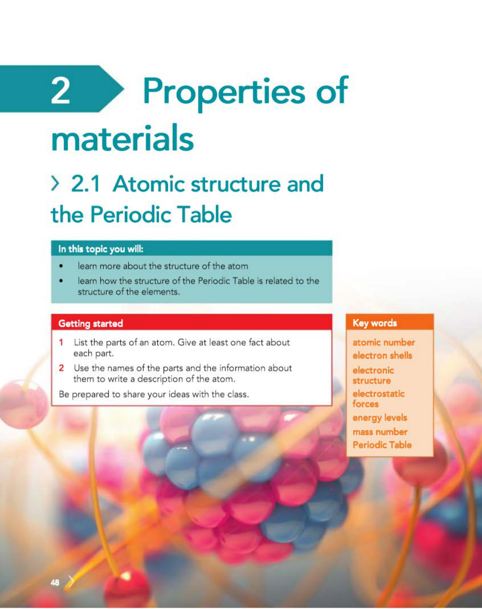
2.1 원자 구조(Atomic structure)와 주기표(Periodic Table)
이 주제에서 배울 것:
• 원자의 구조를 더 자세히 배운다.
• 주기표의 구조가 원소의 구조와 어떻게 연결되는지 배운다.
시작하기(Getting started)
1. 원자를 이루는 부분들을 적어라. 부분마다 사실을 적어도 하나씩 써라.
2. 부분들의 이름과 그에 대한 정보를 써서 원자를 설명하는 글을 써라.
수업에서 자기 생각을 발표할 준비를 해라.
핵심 낱말(Key words)
원자 번호(atomic number)
전자 껍질(electron shells)
전자 배치(electronic structure)
정전기적 힘(electrostatic forces)
에너지 준위(energy levels)
질량수(mass number)
주기표(Periodic Table)
배경 그림: 빨간 공과 파란 공이 뭉쳐 있는 원자핵과 그 둘레를 도는 궤도가 그려져 있다. 쪽 번호 48.
원자는 양성자(proton)·중성자(neutron)가 모인 원자핵(nucleus)과 그 둘레의 전자(electron)로 이루어진다. 원자 번호(atomic number)는 양성자 수이고, 질량수(mass number)는 양성자 수와 중성자 수를 더한 값이다.
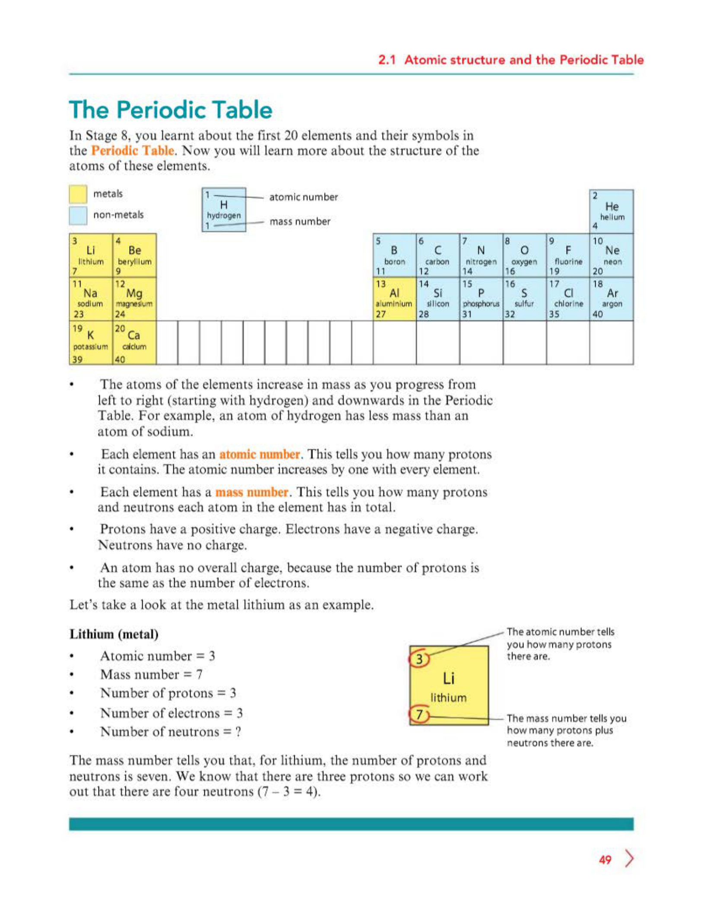
주기표(Periodic Table)
8학년(Stage 8)에서는 주기표(Periodic Table)에 있는 처음 20개 원소와 그 기호를 배웠다. 이제 이 원소들의 원자 구조를 더 자세히 배운다.
[주기표 그림] 노란색 = 금속(metals), 하늘색 = 비금속(non-metals)
보기 칸: 수소(H, hydrogen) 칸에서 위의 숫자 1은 원자 번호(atomic number), 아래 숫자 1은 질량수(mass number)이다.
1주기: 1 H 수소(hydrogen) 1 · 2 He 헬륨(helium) 4
2주기: 3 Li 리튬(lithium) 7 · 4 Be 베릴륨(beryllium) 9 · 5 B 붕소(boron) 11 · 6 C 탄소(carbon) 12 · 7 N 질소(nitrogen) 14 · 8 O 산소(oxygen) 16 · 9 F 플루오린(fluorine) 19 · 10 Ne 네온(neon) 20
3주기: 11 Na 나트륨(sodium) 23 · 12 Mg 마그네슘(magnesium) 24 · 13 Al 알루미늄(aluminium) 27 · 14 Si 규소(silicon) 28 · 15 P 인(phosphorus) 31 · 16 S 황(sulfur) 32 · 17 Cl 염소(chlorine) 35 · 18 Ar 아르곤(argon) 40
4주기: 19 K 칼륨(potassium) 39 · 20 Ca 칼슘(calcium) 40 (나머지 칸은 비어 있다)
금속: Li, Be, Na, Mg, Al, K, Ca / 나머지는 비금속이다.
• 주기표에서 왼쪽에서 오른쪽으로(수소부터 시작), 그리고 아래로 갈수록 원자의 질량이 커진다. 예를 들어 수소 원자는 나트륨 원자보다 질량이 작다.
• 원소마다 원자 번호(atomic number)가 있다. 원자 번호는 그 원소에 양성자(proton)가 몇 개 있는지 알려 준다. 원자 번호는 원소마다 하나씩 커진다.
• 원소마다 질량수(mass number)가 있다. 질량수는 그 원소의 원자 하나에 양성자(proton)와 중성자(neutron)가 모두 합쳐 몇 개인지 알려 준다.
• 양성자는 양전하(positive charge)를 띤다. 전자(electron)는 음전하(negative charge)를 띤다. 중성자는 전하가 없다(no charge).
• 원자는 전체적으로 전하가 없다(no overall charge). 양성자 수와 전자 수가 같기 때문이다.
금속인 리튬을 예로 살펴보자.
리튬(Lithium, 금속)
• 원자 번호 = 3
• 질량수 = 7
• 양성자 수(number of protons) = 3
• 전자 수(number of electrons) = 3
• 중성자 수(number of neutrons) = ?
[리튬 칸 그림] 위의 3에 동그라미: 원자 번호는 양성자가 몇 개인지 알려 준다.
아래의 7에 동그라미: 질량수는 양성자와 중성자를 더한 개수를 알려 준다.
질량수를 보면 리튬의 양성자와 중성자 수는 합쳐서 7개이다. 양성자가 3개인 것을 알므로 중성자는 4개라고 계산할 수 있다(7 − 3 = 4).
중성자 수 = 질량수 − 원자 번호이고, 원자에서는 양성자 수 = 전자 수 = 원자 번호이다. 예: 나트륨(Na)은 원자 번호 11, 질량수 23이므로 양성자 11개, 전자 11개, 중성자 12개이다.
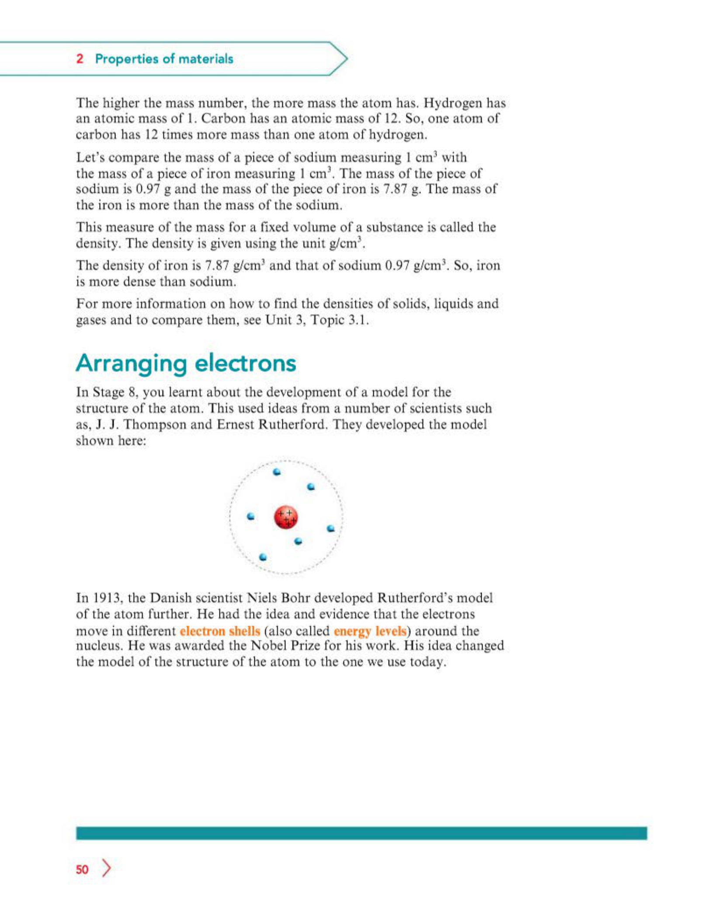
질량수(mass number)가 클수록 원자의 질량이 더 크다. 수소(hydrogen)의 원자 질량(atomic mass)은 1이다. 탄소(carbon)의 원자 질량은 12이다. 따라서 탄소 원자 하나는 수소 원자 하나보다 질량이 12배 크다.
부피가 1 cm³인 나트륨(sodium) 조각과 부피가 1 cm³인 철(iron) 조각의 질량을 비교해 보자. 나트륨 조각의 질량은 0.97 g이고 철 조각의 질량은 7.87 g이다. 철의 질량이 나트륨의 질량보다 크다.
물질의 일정한 부피에 대한 질량을 밀도(density)라고 한다. 밀도의 단위는 g/cm³이다.
철의 밀도는 7.87 g/cm³이고 나트륨의 밀도는 0.97 g/cm³이다. 따라서 철은 나트륨보다 밀도가 크다(more dense).
고체·액체·기체의 밀도를 구하고 비교하는 방법은 3단원 3.1 주제(Unit 3, Topic 3.1)에서 더 볼 수 있다.
전자 배치(Arranging electrons)
8학년(Stage 8)에서 원자 구조 모형이 어떻게 발전했는지 배웠다. 이 모형에는 J. J. 톰슨(J. J. Thompson)과 어니스트 러더퍼드(Ernest Rutherford) 같은 여러 과학자의 생각이 쓰였다. 이들은 아래 그림의 모형을 만들었다.
[그림] 가운데에 + 전하를 띤 빨간 원자핵(nucleus)이 있고, 그 둘레 점선 원 안에 파란 전자(electron) 6개가 흩어져 있다.
1913년, 덴마크 과학자 닐스 보어(Niels Bohr)가 러더퍼드의 원자 모형을 더 발전시켰다. 그는 전자가 원자핵 둘레의 서로 다른 전자 껍질(electron shells)(에너지 준위(energy levels)라고도 한다)에서 움직인다는 생각과 증거를 내놓았다. 그는 이 연구로 노벨상을 받았다. 그의 생각으로 원자 구조 모형이 오늘날 우리가 쓰는 모형으로 바뀌었다.
50쪽
밀도(density) = 질량 ÷ 부피이고 단위는 g/cm³이다. 전자 껍질(electron shells)과 에너지 준위(energy levels)는 같은 뜻이므로 둘 다 영어로 쓸 수 있어야 한다.
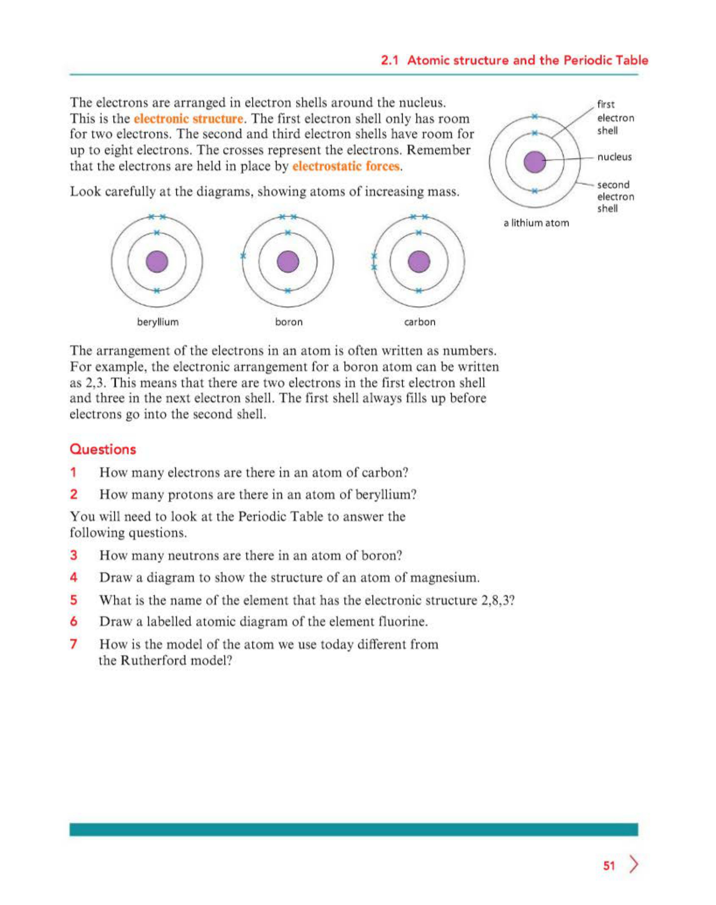
전자는 원자핵 둘레의 전자 껍질(electron shell)에 배치되어 있다. 이것을 전자 배치(electronic structure)라고 한다. 첫 번째 전자 껍질에는 전자가 2개까지만 들어갈 수 있다. 두 번째와 세 번째 전자 껍질에는 전자가 8개까지 들어갈 수 있다. 그림의 × 표시는 전자를 나타낸다. 전자는 정전기력(electrostatic forces)에 의해 제자리에 붙잡혀 있다는 것을 기억하라.
질량이 점점 커지는 원자들을 보여 주는 그림을 잘 살펴보라.
[오른쪽 그림: 리튬 원자(a lithium atom) — 가운데 원자핵(nucleus), 안쪽 원의 첫 번째 전자 껍질(first electron shell)에 전자 2개, 바깥 원의 두 번째 전자 껍질(second electron shell)에 전자 1개]
[아래 그림 세 개: 베릴륨(beryllium) 첫 껍질 2개·둘째 껍질 2개 / 붕소(boron) 첫 껍질 2개·둘째 껍질 3개 / 탄소(carbon) 첫 껍질 2개·둘째 껍질 4개]
원자 속 전자의 배치는 흔히 숫자로 적는다. 예를 들어 붕소 원자의 전자 배치(electronic arrangement)는 2,3으로 적을 수 있다. 이것은 첫 번째 전자 껍질에 전자가 2개, 그다음 전자 껍질에 3개 있다는 뜻이다. 전자는 언제나 첫 번째 껍질이 다 찬 뒤에 두 번째 껍질로 들어간다.
문제(Questions)
1. 탄소 원자 하나에는 전자가 몇 개 있는가?
2. 베릴륨 원자 하나에는 양성자(protons)가 몇 개 있는가?
다음 문제는 주기표(Periodic Table)를 보고 답해야 한다.
3. 붕소 원자 하나에는 중성자(neutrons)가 몇 개 있는가?
4. 마그네슘(magnesium) 원자의 구조를 그림으로 그려라.
5. 전자 배치가 2,8,3인 원소의 이름은 무엇인가?
6. 플루오린(fluorine) 원소의 원자 그림을 그리고 각 부분에 이름을 붙여라(labelled).
7. 오늘날 우리가 쓰는 원자 모형은 러더퍼드 모형(Rutherford model)과 어떻게 다른가?
껍질마다 들어가는 전자 수는 2개, 8개, 8개 순서이고, 안쪽 껍질이 다 차야 바깥 껍질로 넘어간다. 원자 번호가 곧 양성자 수이자 전자 수이고, 중성자 수는 질량수에서 원자 번호를 빼서 구한다(예: 붕소 11−5=6).
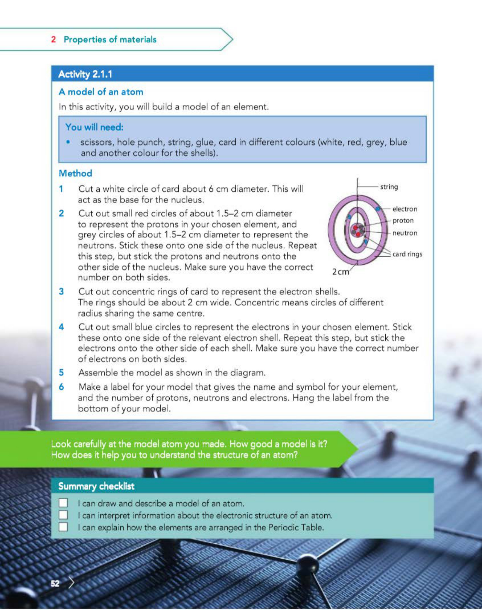
활동 2.1.1
원자 모형(A model of an atom)
이 활동에서는 원소(element) 하나의 모형을 만든다.
준비물:
· 가위, 펀치(구멍 뚫개), 실, 풀, 여러 색의 두꺼운 종이(흰색·빨간색·회색·파란색, 그리고 껍질(shell)에 쓸 다른 색 하나)
방법(Method)
1. 흰 종이를 지름 약 6 cm의 원으로 자른다. 이것이 원자핵(nucleus)의 받침이 된다.
2. 지름 약 1.5~2 cm의 작은 빨간 원을 잘라 고른 원소의 양성자(proton)를 나타내고, 지름 약 1.5~2 cm의 회색 원을 잘라 중성자(neutron)를 나타낸다. 이것들을 원자핵의 한쪽 면에 붙인다. 같은 일을 한 번 더 해서 양성자와 중성자를 원자핵의 다른 쪽 면에도 붙인다. 양쪽 면의 개수가 맞는지 확인한다.
3. 종이를 동심원(concentric) 고리 모양으로 잘라 전자껍질(electron shell)을 나타낸다. 고리의 폭은 약 2 cm로 한다. 동심원이란 중심은 같고 반지름이 서로 다른 원들을 말한다.
4. 작은 파란 원을 잘라 고른 원소의 전자(electron)를 나타낸다. 이것들을 알맞은 전자껍질의 한쪽 면에 붙인다. 같은 일을 한 번 더 해서 각 껍질의 다른 쪽 면에도 전자를 붙인다. 양쪽 면의 전자 개수가 맞는지 확인한다.
5. 그림처럼 모형을 조립한다.
6. 모형에 붙일 이름표를 만든다. 이름표에는 원소의 이름과 원소 기호(symbol), 양성자·중성자·전자의 개수를 적는다. 이름표는 모형 아래쪽에 매단다.
[그림] 실(string)에 매달린 원자 모형: 가운데 원자핵에 빨간 양성자(proton)와 회색 중성자(neutron)가 붙어 있고, 그 둘레에 보라색 종이 고리(card rings) 두 개가 있으며 고리 위에 파란 전자(electron)가 붙어 있다. 고리 폭은 2 cm로 표시되어 있다.
자신이 만든 원자 모형을 잘 살펴보자. 얼마나 좋은 모형인가? 원자의 구조를 이해하는 데 어떻게 도움이 되는가?
요약 점검표(Summary checklist)
□ 원자 모형을 그리고 설명할 수 있다.
□ 원자의 전자 배치(electronic structure)에 대한 정보를 해석할 수 있다.
□ 주기표(Periodic Table)에서 원소들이 어떻게 배열되는지 설명할 수 있다.
양성자 수 = 전자 수(중성 원자)이므로 양쪽 면에 붙이는 빨간 원과 파란 원의 개수가 같아야 한다. '얼마나 좋은 모형인가' 질문에는 실제 원자는 전자가 핵보다 훨씬 멀리 있고 크기 비율이 모형과 다르다는 한계를 적으면 된다.
이 자료는 물질의 성질(Properties of materials) 단원에 속하는 원자 구조(atomic structure) 자료다. 원자를 이루는 양성자(proton), 중성자(neutron), 전자(electron)가 각각 어디에 있고 어떤 전하를 갖는지가 출발점이다. 원자의 중심에는 원자핵(nucleus)이 있고, 그 바깥을 전자가 돈다.
제목에 나온 동위원소(isotope)는 같은 원소인데 중성자 수만 다른 원자를 말한다. 양성자 수(원자번호, atomic number)가 같으면 같은 원소이고, 양성자와 중성자를 합한 수(질량수, mass number)가 다르면 서로 동위원소다. 그래서 화학적 성질은 같지만 질량이 다르다.
전자껍질(electron shell)은 전자가 원자핵 주위에서 놓이는 층이다. 안쪽 껍질부터 차례로 채워지며, 껍질마다 들어갈 수 있는 전자 수가 정해져 있다. 이 배치를 전자배치(electron configuration)라고 부른다.
이 자료는 2027/28년 시험 과정 기준으로 만들어진 것이다. 즉 지금 배우는 내용이 그대로 이어지는 최신 교육과정용 자료다.
✍️ 꼭 알아야 하는 것
- 양성자·중성자·전자의 위치와 전하, 그리고 원자번호와 질량수로 각 입자의 개수를 구하는 방법
- 동위원소가 무엇인지(양성자 수는 같고 중성자 수만 다름)와 전자가 껍질에 채워지는 순서
주기율표(periodic table)는 세상의 모든 원소(element)를 성질이 비슷한 것끼리 줄 세워 놓은 표다. 가로줄을 주기(period), 세로줄을 족(group)이라고 부른다. 같은 세로줄에 있는 원소끼리는 성질이 서로 닮았다는 것이 이 표의 핵심이다.
이 자료가 3D인 이유는 평평한 종이 표로는 잘 안 보이는 것을 입체로 돌려 가며 보게 하기 위해서다. 금속(metal)과 비금속(non-metal)이 표의 어느 쪽에 몰려 있는지, 어떤 원소가 서로 이웃인지를 눈으로 잡으면 외우기가 훨씬 쉬워진다.
이 단원 이름이 Properties of materials(물질의 성질)인 것도 이유가 있다. 어떤 물질이 단단한지, 전기를 통하는지, 잘 녹는지 같은 성질은 그 물질을 이루는 원소가 주기율표의 어디에 있느냐와 이어져 있다. 즉 주기율표는 원소 이름 목록이 아니라 성질을 예측하는 도구다.
✍️ 꼭 알아야 하는 것
- 주기율표에서 가로줄=주기(period), 세로줄=족(group)이고, 같은 족 원소는 성질이 비슷하다는 것
- 원소가 주기율표의 어느 위치에 있느냐가 그 물질의 성질(properties)과 연결된다는 것
이 자료는 전자 배치(electronic structure)를 다룬다. 원자 안의 전자는 아무 데나 흩어져 있는 것이 아니라, 원자핵 바깥의 껍질(shell)에 순서대로 채워진다. 안쪽 껍질부터 먼저 차고, 그 껍질이 다 차야 그다음 껍질로 넘어간다.
이 자료는 Properties of materials(물질의 성질) 단원에 속해 있다. 즉 전자 배치를 외우는 것 자체가 목적이 아니라, 전자가 어떻게 배열되어 있느냐가 그 물질이 어떤 성질을 보이는지로 이어진다는 흐름이다.
제목에 붙은 2027/28 exams는 이 자료가 2027~2028년 시험 과정(specification)에 맞춰 만들어졌다는 뜻이다. 같은 GCSE Chemistry라도 연도에 따라 범위가 조금씩 다르므로, 공부할 때는 이 연도 기준 자료를 쓰는 것이 맞다.
✍️ 꼭 알아야 하는 것
- 전자가 껍질에 채워지는 순서, 즉 전자 배치(electronic structure)를 쓸 줄 알아야 한다.
- 전자 배치가 물질의 성질(properties of materials)과 어떻게 연결되는지 이해해야 한다.
2.2 족별 경향Trends in Groups · 선생님 2.2 · C1.3화학
이 수업의 목표는 두 가지다. 첫째, 자료(data)를 해석해 1족 원소(Group 1 elements)의 성질에 어떤 규칙(patterns, trends)이 있는지 설명하는 것이다. 둘째, 그 규칙을 이용해 아직 배우지 않은 1족 원소의 성질을 예측(predict)하는 것이다. 즉 외우는 수업이 아니라, 숫자 표를 보고 '위에서 아래로 갈수록 이렇게 변한다'를 찾아내는 수업이다.
이 단원의 핵심 낱말(keywords)은 주기율표(Periodic Table), 1족(group 1), 알칼리 금속(alkali metals), 규칙성(trends), 반응성이 큰(reactive)이다. 1족 원소는 통틀어 알칼리 금속이라고 부른다는 점, 그리고 이들이 반응을 잘 하는 금속이라는 점이 이 자료가 계속 붙잡고 가는 내용이다.
자료에는 자기 실력을 스스로 점검하는 표가 있고, 단계가 Meeting(기본) · Exceeding(잘함) · Mastering(완전히 함) 세 칸으로 나뉜다. 기본 단계에 적힌 문장은 '1족 원소들을 나열할 수 있고, 알칼리 금속으로서 그 성질을 설명할 수 있다'이다. 공부를 마친 뒤 이 문장을 보고 스스로 되는지 확인하면 된다.
✍️ 꼭 알아야 하는 것
- 1족 원소 = 알칼리 금속(alkali metals)이라는 이름과, 어떤 원소들이 여기에 들어가는지 순서대로 말할 수 있어야 한다.
- 표나 그래프의 자료를 보고 1족의 규칙(trend)을 찾아 설명하고, 그 규칙으로 다른 1족 원소의 성질을 예측할 수 있어야 한다.
📚 이 자료의 핵심 단어
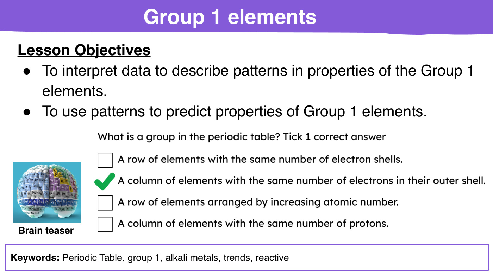
학습 목표 (Lesson Objectives)
● 자료(data)를 해석해서 1족 원소(Group 1 elements)의 성질에 나타나는 규칙(patterns)을 설명한다.
● 규칙을 이용해 1족 원소의 성질을 예측한다(predict).
1족 원소 (Group 1 elements)
핵심 낱말(Keywords): 주기표(Periodic Table), 1족(group 1), 알칼리 금속(alkali metals), 경향(trends), 반응성이 큰(reactive)
두뇌 퀴즈(Brain teaser)
1족 원소는 알칼리 금속(alkali metals)이라고도 부른다. 이 단원은 족의 아래로 내려갈수록 성질이 어떻게 달라지는지, 즉 경향(trends)을 찾는 것이 핵심이다.
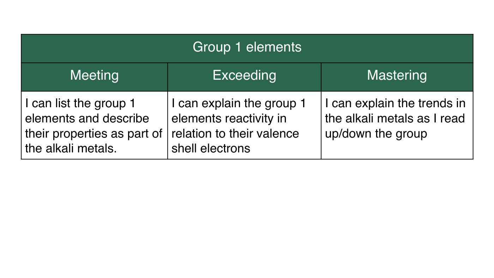
기본(Meeting)
나는 1족 원소(group 1 elements)를 나열하고, 알칼리 금속(alkali metals)으로서 그 성질(properties)을 설명할 수 있다.
우수(Exceeding)
나는 1족 원소의 반응성(reactivity)을 최외각 전자껍질 전자(valence shell electrons)와 연관 지어 설명할 수 있다.
숙달(Mastering)
나는 족을 위아래로(up/down the group) 따라가며 알칼리 금속의 경향(trends)을 설명할 수 있다.
1족 원소는 최외각 전자껍질에 전자가 1개뿐이라 이 전자를 쉽게 잃는다. 족 아래로 내려갈수록 반응성이 커진다는 경향을 꼭 기억한다.
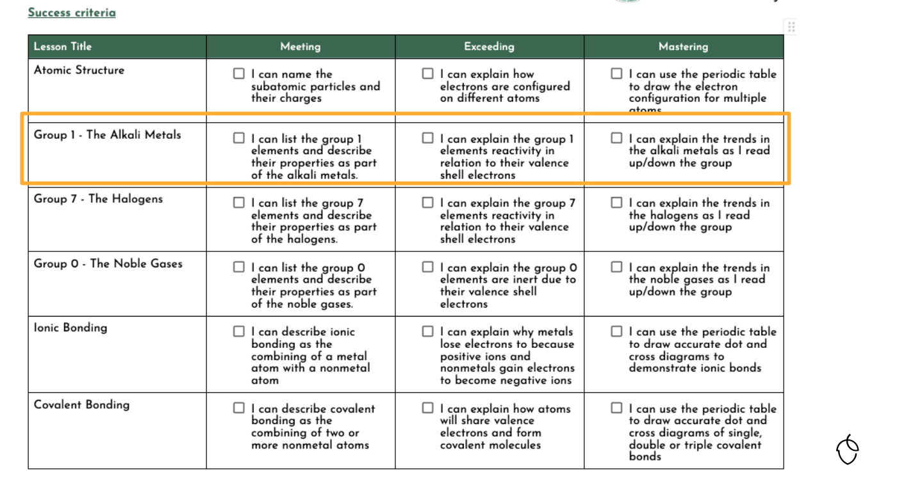
표의 칸: 수업 제목(Lesson Title) / 기본(Meeting) / 우수(Exceeding) / 탁월(Mastering)
원자 구조(Atomic Structure)
기본: 나는 아원자 입자(subatomic particles)의 이름과 그 전하(charge)를 말할 수 있다.
우수: 나는 여러 원자에서 전자가 어떻게 배치되는지(전자 배치, electron configuration) 설명할 수 있다.
탁월: 나는 주기표(periodic table)를 이용해 여러 원자의 전자 배치를 그릴 수 있다.
1족 – 알칼리 금속(Group 1 – The Alkali Metals) ← 주황색 네모로 강조된 줄
기본: 나는 1족 원소들을 나열하고, 알칼리 금속(alkali metals)으로서의 성질을 설명할 수 있다.
우수: 나는 1족 원소의 반응성(reactivity)을 원자가 껍질 전자(valence shell electrons)와 관련지어 설명할 수 있다.
탁월: 나는 알칼리 금속에서 족을 위아래로(up/down the group) 읽을 때 나타나는 경향(trends)을 설명할 수 있다.
17족 – 할로젠(Group 7 – The Halogens)
기본: 나는 7족 원소들을 나열하고, 할로젠(halogens)으로서의 성질을 설명할 수 있다.
우수: 나는 7족 원소의 반응성을 원자가 껍질 전자와 관련지어 설명할 수 있다.
탁월: 나는 할로젠에서 족을 위아래로 읽을 때 나타나는 경향을 설명할 수 있다.
0족 – 비활성 기체(Group 0 – The Noble Gases)
기본: 나는 0족 원소들을 나열하고, 비활성 기체(noble gases)로서의 성질을 설명할 수 있다.
우수: 나는 0족 원소가 원자가 껍질 전자 때문에 반응하지 않는다(inert)는 것을 설명할 수 있다.
탁월: 나는 비활성 기체에서 족을 위아래로 읽을 때 나타나는 경향을 설명할 수 있다.
이온 결합(Ionic Bonding)
기본: 나는 이온 결합을 금속 원자(metal atom)와 비금속 원자(nonmetal atom)의 결합으로 설명할 수 있다.
우수: 나는 금속이 전자를 잃어 양이온(positive ions)이 되고, 비금속이 전자를 얻어 음이온(negative ions)이 되는 이유를 설명할 수 있다.
탁월: 나는 주기표를 이용해 이온 결합을 보여 주는 정확한 점-가위표 그림(dot and cross diagrams)을 그릴 수 있다.
공유 결합(Covalent Bonding)
기본: 나는 공유 결합을 두 개 이상의 비금속 원자의 결합으로 설명할 수 있다.
우수: 나는 원자들이 원자가 전자를 공유(share)하여 공유 결합 분자(covalent molecules)를 만드는 방법을 설명할 수 있다.
탁월: 나는 주기표를 이용해 단일·이중·삼중 공유 결합(single, double or triple covalent bonds)의 정확한 점-가위표 그림을 그릴 수 있다.
이번 수업은 주황색 네모 줄인 1족 알칼리 금속이다. 목표는 원소 이름과 성질을 말하고, 반응성을 바깥 껍질 전자 1개와 연결해 설명하고, 족을 따라 내려갈수록 반응성이 커지는 경향까지 설명하는 것이다. 표의 'Group 7'은 우리나라 교과서의 17족, 'Group 0'은 18족과 같다.
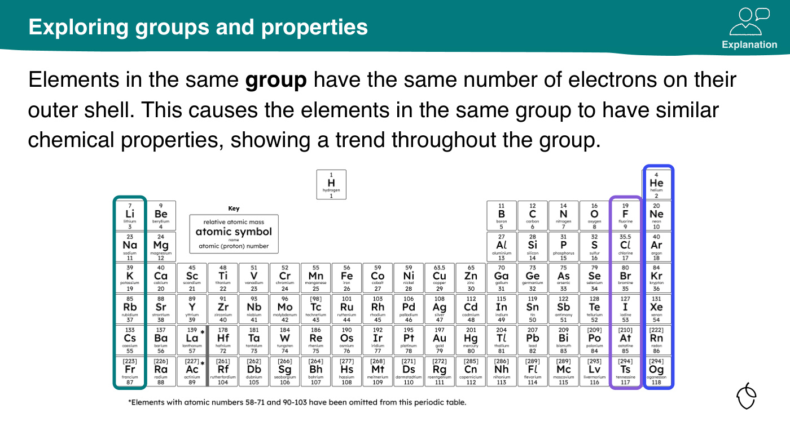
같은 족(group)에 있는 원소들은 가장 바깥 껍질(outer shell)에 있는 전자(electrons)의 수가 같다.
이 때문에 같은 족의 원소들은 화학적 성질(chemical properties)이 비슷하며, 족을 따라 내려가면서 경향(trend)을 보인다.
족과 성질 탐구하기(Exploring groups and properties)
같은 족 원소의 화학적 성질이 비슷한 까닭은 바깥 껍질의 전자 수가 같기 때문이다. 답을 쓸 때 'same number of electrons in the outer shell'이라는 표현을 그대로 쓰면 된다.
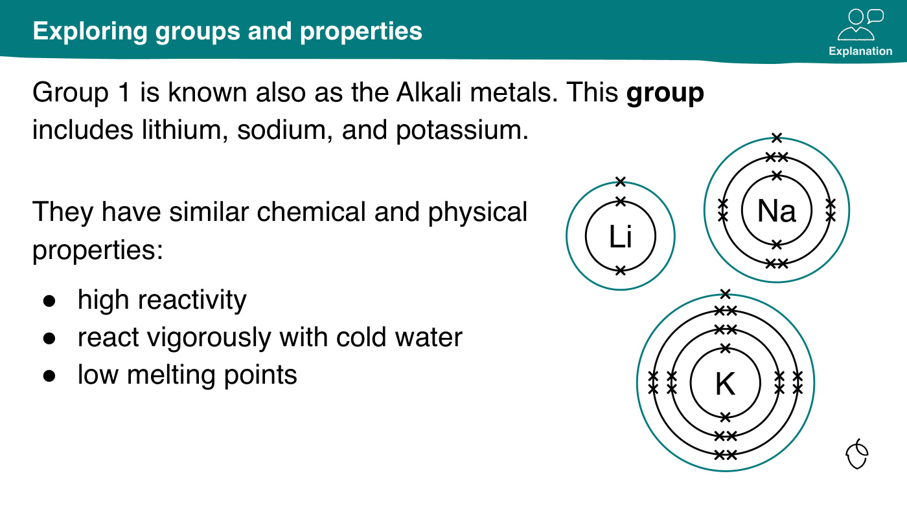
1족(Group 1)은 알칼리 금속(Alkali metals)이라고도 불린다. 이 족에는 리튬(lithium), 나트륨(sodium), 칼륨(potassium)이 들어 있다.
족과 성질 알아보기(Exploring groups and properties)
이 원소들은 비슷한 화학적 성질(chemical properties)과 물리적 성질(physical properties)을 가진다.
● 반응성이 높다(high reactivity)
● 차가운 물과 격렬하게 반응한다(react vigorously with cold water)
● 녹는점이 낮다(low melting points)
Li(리튬), Na(나트륨), K(칼륨)
나트륨은 영어로 sodium, 칼륨은 potassium이라서 원소기호 Na·K와 이름이 다르게 생겼다. 답을 쓸 때 헷갈리지 않게 따로 외워 두어야 한다.
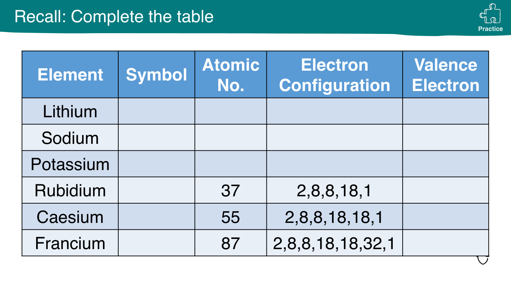
과제 B(Task B)
복습(Recall): 표를 완성하라(Complete the table).
표의 칸: 원소(Element) / 원소 기호(Symbol) / 원자 번호(Atomic No.) / 전자 배치(Electron Configuration) / 원자가 전자(Valence Electron)
리튬(Lithium)
나트륨(Sodium)
칼륨(Potassium)
루비듐(Rubidium) — 원자 번호 37, 전자 배치 2,8,8,18,1
세슘(Caesium) — 원자 번호 55, 전자 배치 2,8,8,18,18,1
프랑슘(Francium) — 원자 번호 87, 전자 배치 2,8,8,18,18,32,1
표의 원소는 모두 1족 원소(Group 1 elements)다. 전자 배치의 마지막 숫자가 모두 1이듯, 1족 원소는 원자가 전자(valence electron)가 모두 1개다.
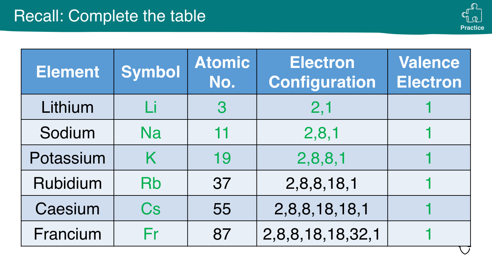
과제 B(Task B)
표의 칸: 원소(Element) / 원소 기호(Symbol) / 원자 번호(Atomic No.) / 전자 배치(Electron Configuration) / 원자가 전자(Valence Electron)
리튬(Lithium) — Li — 3 — 2,1 — 1
나트륨(Sodium) — Na — 11 — 2,8,1 — 1
칼륨(Potassium) — K — 19 — 2,8,8,1 — 1
루비듐(Rubidium) — Rb — 37 — 2,8,8,18,1 — 1
세슘(Caesium) — Cs — 55 — 2,8,8,18,18,1 — 1
프랑슘(Francium) — Fr — 87 — 2,8,8,18,18,32,1 — 1
떠올려 보기(Recall): 표를 완성하라.
1족 원소는 모두 가장 바깥 껍질에 원자가 전자(valence electron)가 1개다. 그래서 같은 족에 묶이고 화학적 성질이 비슷하다. 전자 배치 숫자를 모두 더하면 원자 번호와 같아야 한다(예: 나트륨 2+8+1=11). 루비듐부터는 흔히 2,8,18,8,1처럼 적기도 하므로 시험에서는 선생님이 수업에서 쓴 방식을 따른다.
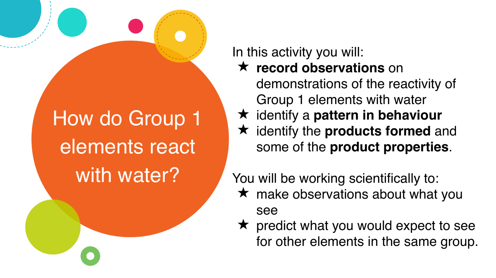
★1족 원소(Group 1 elements)가 물(water)과 반응하는 반응성(reactivity)을 보여 주는 시범 실험(demonstrations)을 보고 관찰한 것(observations)을 기록한다.
★행동에서 규칙성(pattern)을 찾는다.
★반응으로 생기는 생성물(products)과 그 생성물의 성질(properties) 몇 가지를 알아낸다.
과학자처럼 탐구하며(working scientifically) 할 일
★눈에 보이는 것을 관찰한다(make observations).
★같은 족(same group)의 다른 원소에서는 무엇이 보일지 예측한다(predict).
1족 원소는 물과 어떻게 반응할까?(How do Group 1 elements react with water?)
1족 원소(리튬 Li, 소듐 Na, 포타슘 K)는 물과 반응해 금속 수산화물(metal hydroxide)과 수소 기체(hydrogen gas)를 만든다. 족의 아래로 내려갈수록 반응이 더 격렬해진다(more reactive down the group)는 규칙을 기억해 두면 예측 문제에 답할 수 있다.
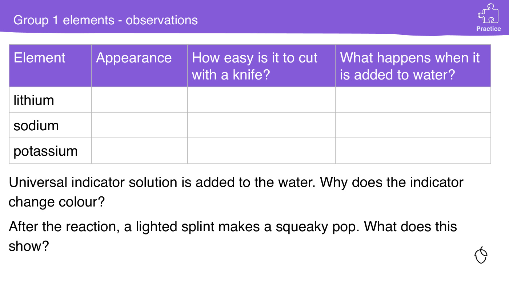
과제 A(Task A)
1족 원소(Group 1 elements) - 관찰 결과(observations)
표의 칸: 원소(Element) / 겉모습(Appearance) / 칼로 자르기가 얼마나 쉬운가?(How easy is it to cut with a knife?) / 물에 넣으면 어떤 일이 일어나는가?(What happens when it is added to water?)
원소: 리튬(lithium), 나트륨(sodium), 칼륨(potassium)
물에 만능 지시약 용액(Universal indicator solution)을 넣는다. 지시약의 색이 왜 바뀌는가?(Why does the indicator change colour?)
반응이 끝난 뒤 불붙인 나무 조각(lighted splint)을 가져가면 '퐁' 소리(squeaky pop)가 난다. 이것은 무엇을 보여 주는가?(What does this show?)
1족 원소는 물과 반응해 알칼리성 수산화물(alkaline hydroxide)을 만들기 때문에 지시약이 보라색·파란색으로 바뀐다. '퐁' 소리는 수소 기체(hydrogen gas)가 생겼다는 증거이고, 아래로 갈수록(리튬→나트륨→칼륨) 더 무르고 더 세게 반응한다.
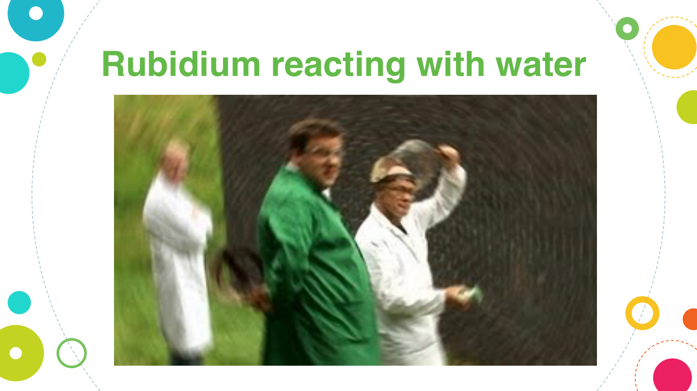
1족 원소(Group 1 elements)는 아래로 갈수록 반응성(reactivity)이 커진다. 그래서 루비듐은 리튬·나트륨·칼륨보다 물과 더 격렬하게 반응하고, 이때 수산화루비듐(rubidium hydroxide)과 수소 기체(hydrogen gas)가 생긴다.
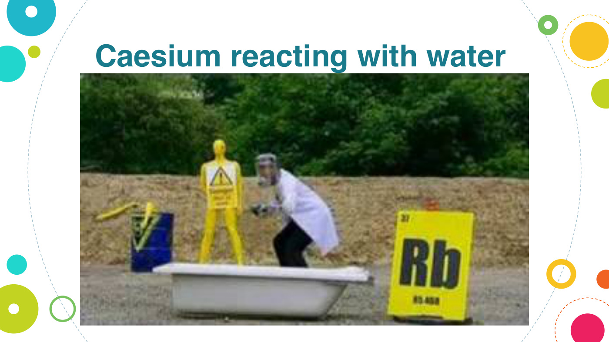
세슘은 1족 원소(Group 1 elements) 중 아래쪽에 있어서 리튬·나트륨·칼륨보다 물과 훨씬 격렬하게 반응한다. 1족은 아래로 갈수록 반응성(reactivity)이 커진다.
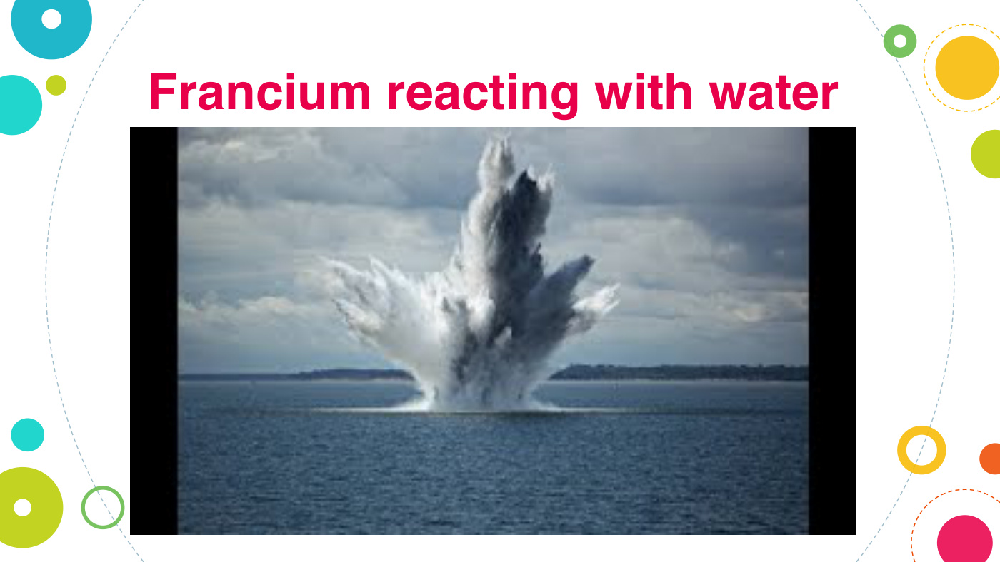
프랑슘은 1족(Group 1)에서 가장 아래에 있어 물과 가장 격렬하게 반응할 것으로 예상된다. 1족은 아래로 내려갈수록 반응성(reactivity)이 커지기 때문이다.
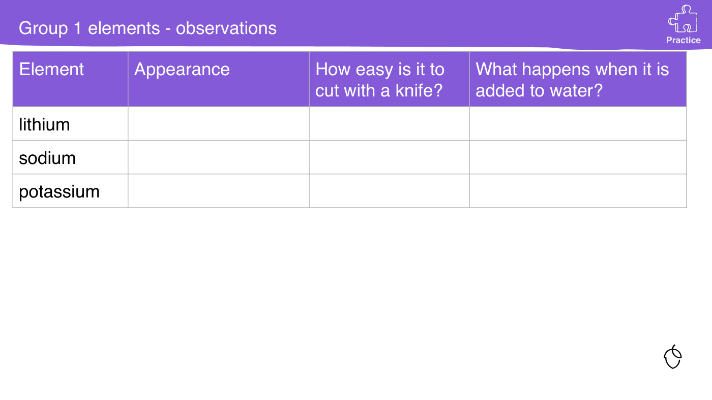
과제 A(Task A)
1족 원소(Group 1 elements) - 관찰(observations)
원소(Element)
겉모습(Appearance)
칼로 자르기가 얼마나 쉬운가?(How easy is it to cut with a knife?)
물에 넣으면 어떻게 되는가?(What happens when it is added to water?)
리튬(lithium)
나트륨(sodium)
칼륨(potassium)
표는 리튬, 나트륨, 칼륨 순서로 1족에서 아래로 내려간다. 세 원소 모두 무른 금속이라 칼로 자를 수 있고, 아래로 갈수록 더 쉽게 잘리며 물과도 더 격렬하게 반응한다는 흐름을 칸마다 비교하며 채운다.
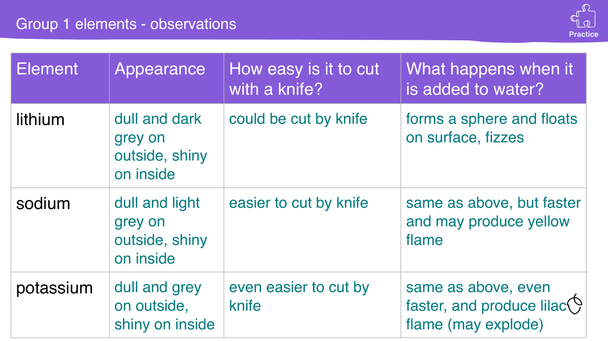
과제 A (Task A)
1족 원소 (Group 1 elements) - 관찰 결과 (observations)
표의 열: 원소 (Element) / 겉모습 (Appearance) / 칼로 자르기가 얼마나 쉬운가? (How easy is it to cut with a knife?) / 물에 넣으면 어떻게 되나? (What happens when it is added to water?)
리튬 (lithium)
- 겉모습: 겉은 광택이 없고(dull) 어두운 회색(dark grey)이며, 안쪽은 반짝인다(shiny).
- 자르기: 칼로 자를 수 있다(could be cut by knife).
- 물에 넣으면: 동그랗게 뭉쳐(forms a sphere) 물 위에 뜨고(floats on surface), 거품을 내며 쉿쉿 소리가 난다(fizzes).
나트륨 (sodium)
- 겉모습: 겉은 광택이 없고 옅은 회색(light grey)이며, 안쪽은 반짝인다.
- 자르기: 리튬보다 더 쉽게 잘린다(easier to cut by knife).
- 물에 넣으면: 리튬과 같지만 더 빠르고(faster), 노란 불꽃(yellow flame)이 생길 수 있다.
칼륨 (potassium)
- 겉모습: 겉은 광택이 없고 회색(grey)이며, 안쪽은 반짝인다.
- 자르기: 훨씬 더 쉽게 잘린다(even easier to cut by knife).
- 물에 넣으면: 위와 같지만 훨씬 더 빠르고(even faster), 연보라색 불꽃(lilac flame)이 생긴다(폭발할 수도 있다(may explode)).
표를 아래로 내려갈수록(리튬 → 나트륨 → 칼륨) 더 무르고(softer) 물과 더 격렬하게 반응한다(more reactive)는 흐름을 잡아 두면 된다. 겉이 광택이 없는 것은 공기와 반응해 표면이 변했기 때문이고, 자른 안쪽이 반짝이는 것이 원래 금속의 모습이다.
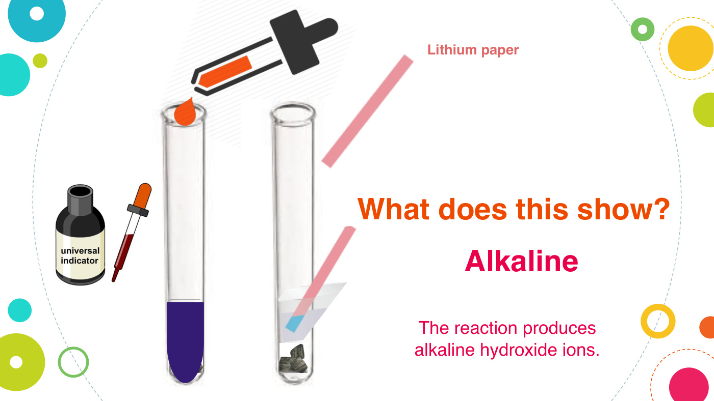
리튬(Lithium) 종이
알칼리성(Alkaline)
이 반응은 알칼리성(alkaline)인 수산화 이온(hydroxide ions)을 만든다.
1족 금속이 물과 반응하면 수산화 이온(OH⁻)이 생겨 용액이 알칼리성(alkaline)이 되고, 지시약 종이가 파란색으로 바뀐다. 알칼리를 확인하는 종이는 보통 리트머스 종이(litmus paper)라고 쓰니 답을 쓸 때 철자를 헷갈리지 않도록 한다.
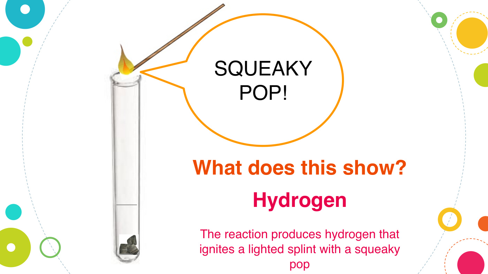
이것은 무엇을 보여 주는가?
수소(Hydrogen)
이 반응에서 수소(hydrogen)가 생기고, 이 수소는 불붙인 나무 막대(lighted splint)를 가져다 대면 '뻥' 하는 소리(squeaky pop)를 내며 탄다.
1족 원소(Group 1 elements)가 물과 반응하면 수소 기체가 생긴다. 수소를 확인하는 시험은 '불붙인 나무 막대를 대면 뻥 소리가 난다(a lighted splint burns with a squeaky pop)'라고 영어로 외워 두면 좋다.
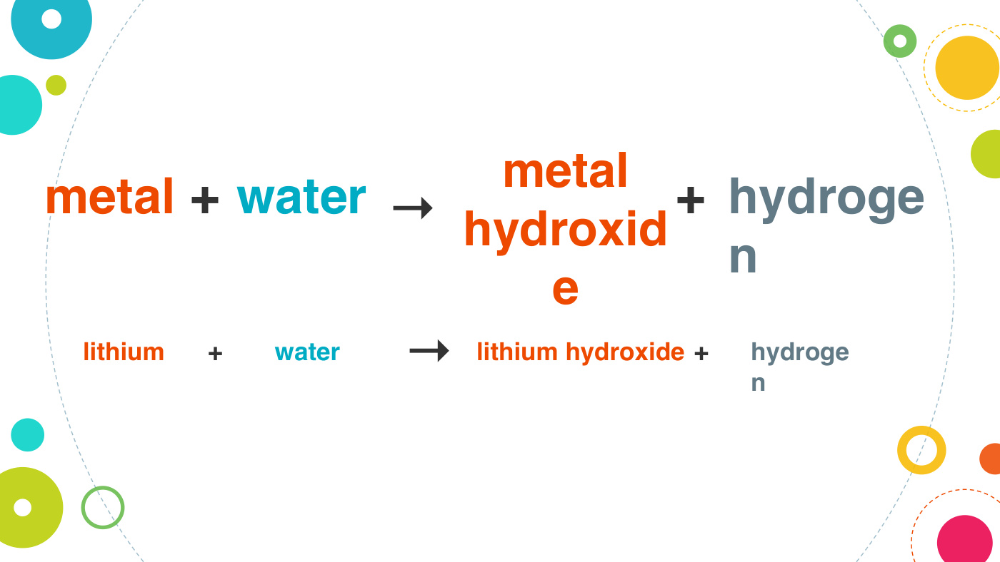
리튬(lithium) + 물(water) → 수산화 리튬(lithium hydroxide) + 수소(hydrogen)
1족 금속은 물과 반응하면 언제나 금속 수산화물과 수소 기체가 생긴다. 금속 이름만 바꾸면 되므로 이 식을 외워 두면 나트륨(sodium)·칼륨(potassium)의 식도 쓸 수 있다.
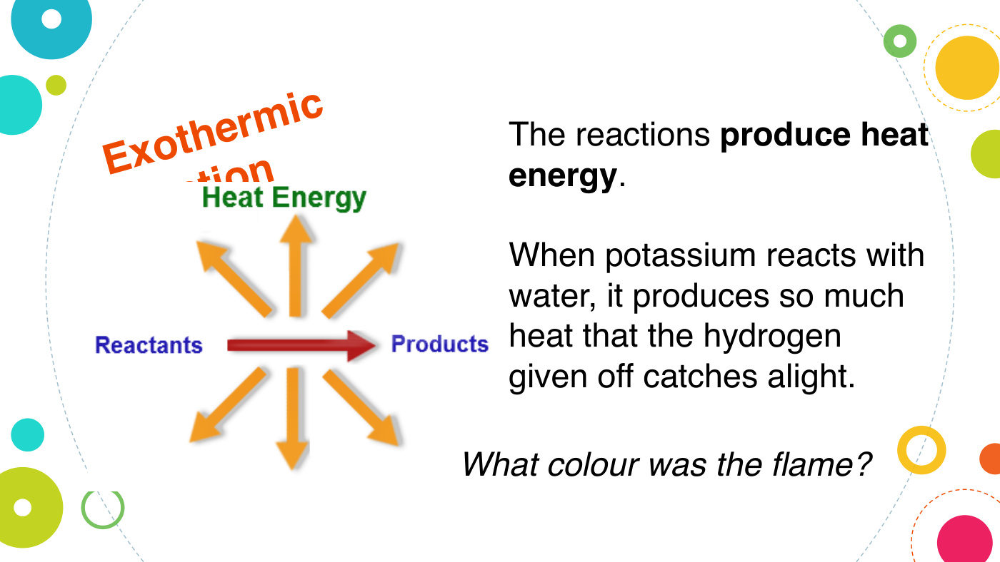
이 반응들은 열에너지(heat energy)를 낸다.
칼륨(potassium)이 물(water)과 반응하면 열이 아주 많이 나서, 나오는 수소(hydrogen)에 불이 붙는다(catches alight).
불꽃은 무슨 색이었나?
칼륨이 물과 반응할 때 나오는 불꽃은 연보라색(lilac)이다. 1족 원소가 물과 반응하면 열이 나므로 발열 반응(exothermic)이라고 쓴다.
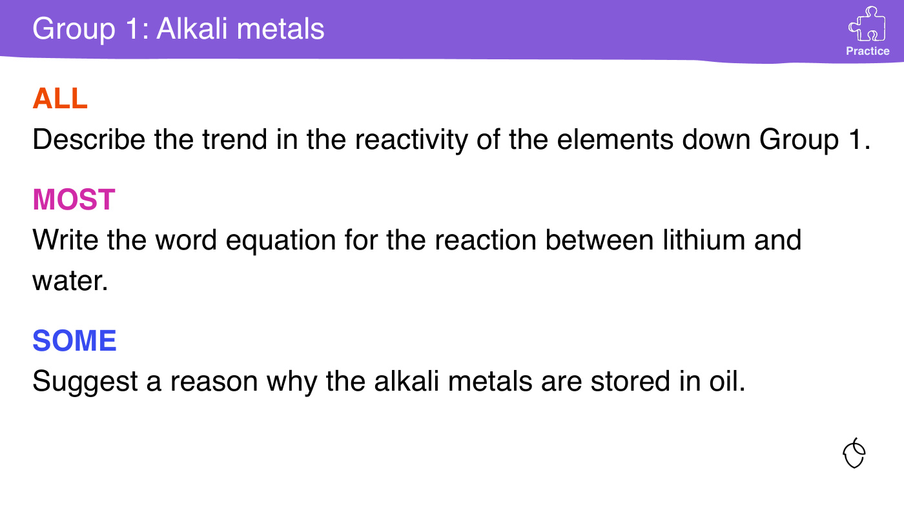
과제 A(Task A)
모두(ALL)
1족 원소들의 반응성(reactivity)이 족의 아래로 내려갈수록(down Group 1) 어떻게 변하는지 그 경향(trend)을 설명하라(Describe).
대부분(MOST)
리튬(lithium)과 물(water)의 반응을 낱말 반응식(word equation)으로 써라.
일부(SOME)
알칼리 금속(alkali metals)을 기름(oil) 속에 보관하는 까닭을 하나 제시하라(Suggest a reason).
1족(Group 1): 알칼리 금속(Alkali metals)
1족은 아래로 내려갈수록 반응성이 커진다(reactivity increases down the group). 리튬과 물의 낱말 반응식은 lithium + water → lithium hydroxide + hydrogen 이고, 알칼리 금속은 공기 속 산소·수증기(oxygen and water vapour)와 반응하지 않도록 기름 속에 보관한다.
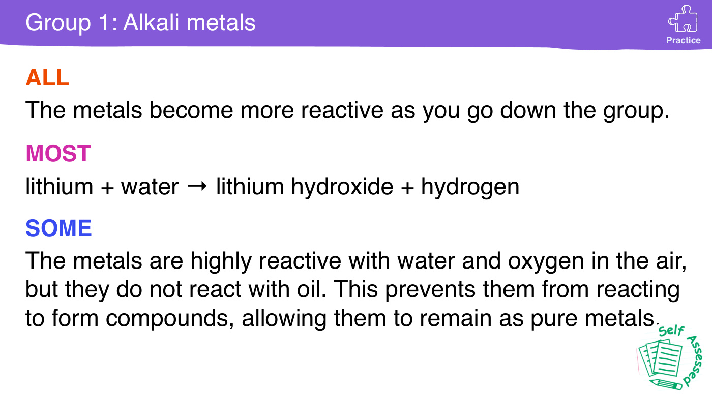
과제 A(Task A)
모두(ALL): 족(group)의 아래로 내려갈수록 금속의 반응성(reactivity)이 더 커진다.
대부분(MOST): 리튬(lithium) + 물(water) → 수산화 리튬(lithium hydroxide) + 수소(hydrogen)
일부(SOME): 이 금속들은 물, 그리고 공기 중의 산소(oxygen)와 매우 잘 반응하지만 기름(oil)과는 반응하지 않는다. 그래서 기름에 넣어 두면 반응해서 화합물(compound)이 되는 것을 막아, 순수한 금속(pure metal)으로 남아 있을 수 있다.
1족: 알칼리 금속(Group 1: Alkali metals)
ALL·MOST·SOME은 난이도별 답의 예시다. 1족 금속은 아래로 갈수록 반응성이 커지고, 물과 반응하면 금속 수산화물(metal hydroxide)과 수소(hydrogen)가 생긴다는 두 가지를 영어로 쓸 수 있어야 한다.
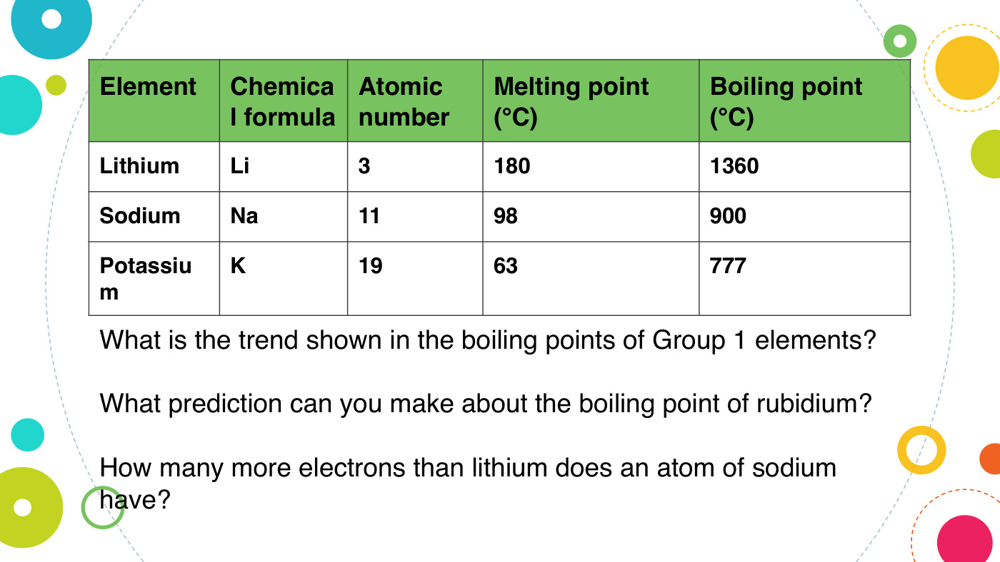
리튬(Lithium) | Li | 3 | 180 | 1360
나트륨(Sodium) | Na | 11 | 98 | 900
칼륨(Potassium) | K | 19 | 63 | 777
1. 1족 원소(Group 1 elements)의 끓는점에서 보이는 경향(trend)은 무엇인가?
2. 루비듐(rubidium)의 끓는점에 대해 어떤 예측(prediction)을 할 수 있는가?
3. 나트륨 원자는 리튬 원자보다 전자(electrons)를 몇 개 더 가지고 있는가?
표에서 리튬 → 나트륨 → 칼륨으로 족 아래로 내려갈수록 녹는점과 끓는점이 점점 낮아지므로, 칼륨 다음인 루비듐의 끓는점은 777℃보다 낮다고 예측할 수 있다. 원자 번호는 전자 수와 같으므로 나트륨(11)은 리튬(3)보다 전자가 8개 더 많다.
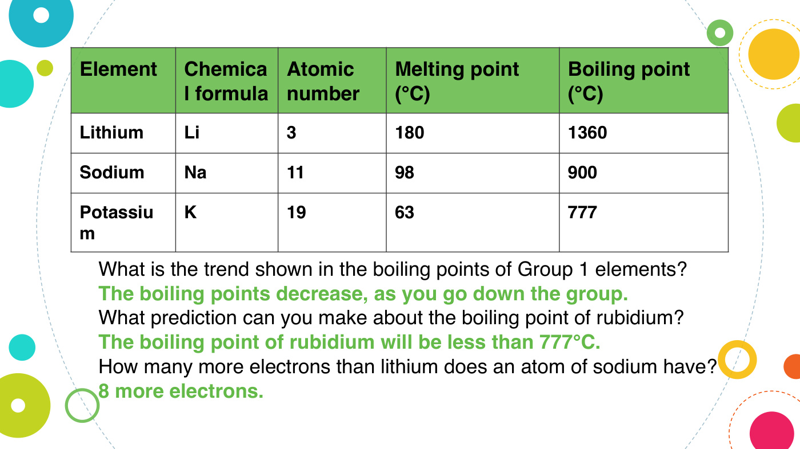
리튬(Lithium) / Li / 3 / 180 / 1360
나트륨(Sodium) / Na / 11 / 98 / 900
칼륨(Potassium) / K / 19 / 63 / 777
질문: 1족 원소(Group 1 elements)의 끓는점에서 보이는 경향(trend)은 무엇인가?
답: 족의 아래로 내려갈수록(as you go down the group) 끓는점이 낮아진다(decrease).
질문: 루비듐(rubidium)의 끓는점에 대해 어떤 예측(prediction)을 할 수 있는가?
답: 루비듐의 끓는점은 777℃보다 낮을 것이다(less than 777℃).
질문: 나트륨 원자는 리튬 원자보다 전자(electrons)를 몇 개 더 가지고 있는가?
답: 8개 더 많다(8 more electrons).
원자 번호는 원자가 가진 전자 수와 같으므로 11 − 3 = 8로 계산한다. 표에서 녹는점도 족의 아래로 갈수록 낮아지므로, 루비듐의 녹는점도 63℃보다 낮다고 예측할 수 있다.
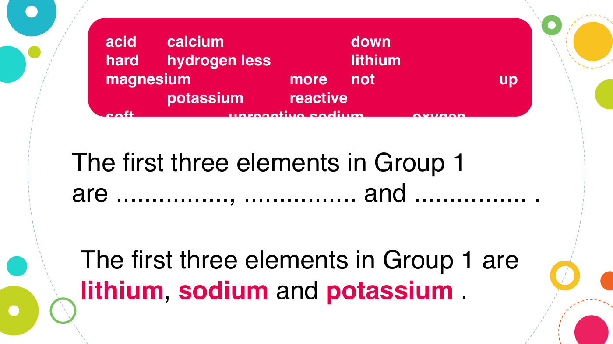
보기 낱말:
산(acid)
칼슘(calcium)
아래로(down)
단단한(hard)
수소(hydrogen)
더 적은(less)
리튬(lithium)
마그네슘(magnesium)
더 많은(more)
~아니다(not)
위로(up)
칼륨(potassium)
반응성이 큰(reactive)
무른(soft)
반응성이 없는(unreactive)
나트륨(sodium)
산소(oxygen)
쉽게(easily)
기름(oil)
답: 1족의 처음 세 원소는 리튬(lithium), 나트륨(sodium), 칼륨(potassium)이다.
수소(hydrogen)는 주기표에서 1족 자리에 놓이지만 알칼리 금속이 아니라서 답에 넣지 않는다. 답은 영어로 lithium, sodium, potassium 순서대로 쓴다.
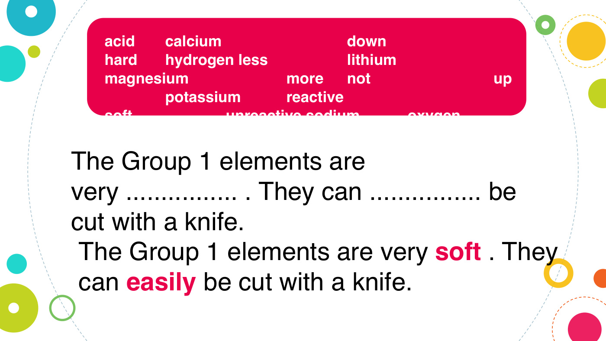
그래서 칼(knife)로 쉽게(easily) 자를 수 있다.
보기 낱말: 산(acid), 칼슘(calcium), 아래(down), 단단한(hard), 수소(hydrogen), 덜(less), 리튬(lithium), 마그네슘(magnesium), 더(more), ~아니다(not), 위(up), 칼륨(potassium), 반응성이 큰(reactive), 무른(soft), 반응성이 없는(unreactive), 나트륨(sodium), 산소(oxygen), 쉽게(easily), 기름(oil)
정답: The Group 1 elements are very soft. They can easily be cut with a knife.
빈칸 답은 soft와 easily다. 1족 원소는 금속인데도 칼로 자를 만큼 무르다는 점이 보통 금속과 다른 특징이다.
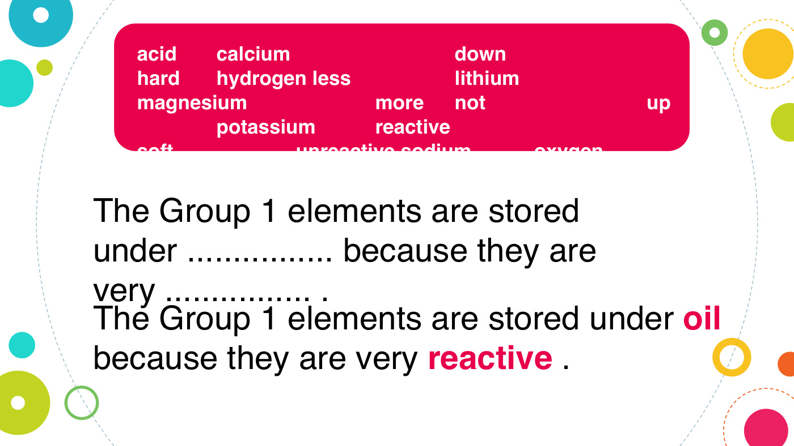
낱말 상자
acid 산 · calcium 칼슘 · down 아래로 · hard 단단한
hydrogen 수소 · less 덜 · lithium 리튬 · magnesium 마그네슘
more 더 · not ~않다 · up 위로 · potassium 칼륨
reactive 반응성이 큰 · soft 무른 · unreactive 반응성이 없는 · sodium 나트륨
oxygen 산소 · easily 쉽게 · oil 기름
정답
1족 원소는 기름(oil) 아래에 보관한다. 왜냐하면 매우 반응성이 크기(reactive) 때문이다.
1족 원소는 공기 중의 산소(oxygen)나 물과 쉽게 반응한다. 그래서 기름 속에 넣어 공기와 물이 닿지 않게 보관한다.
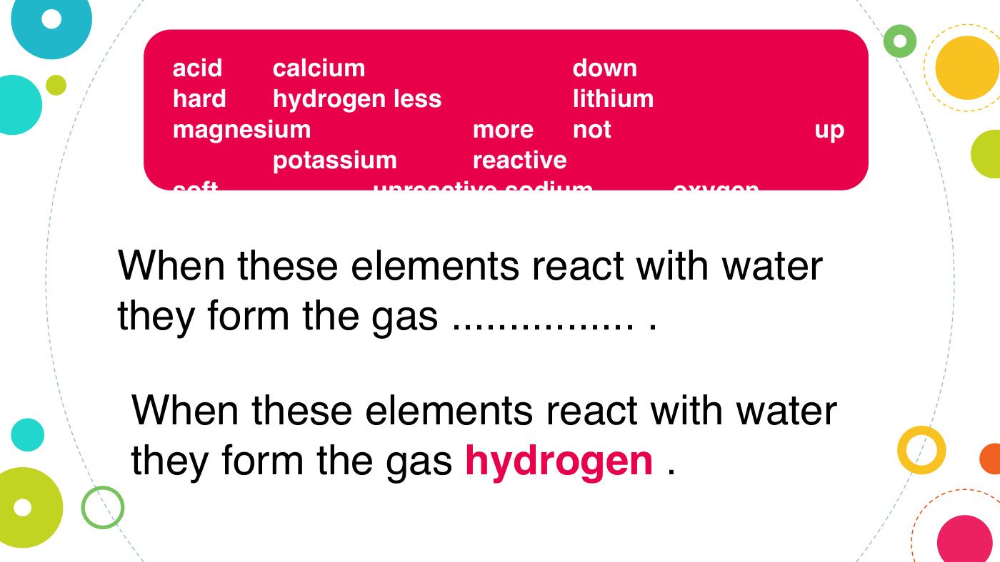
기체 ................ 가 생긴다.
보기 낱말:
산(acid), 칼슘(calcium), 아래로(down), 단단한(hard), 수소(hydrogen), 덜(less), 리튬(lithium), 마그네슘(magnesium), 더(more), ~이 아닌(not), 위로(up), 칼륨(potassium), 반응성이 큰(reactive), 무른(soft), 반응성이 없는(unreactive), 나트륨(sodium), 산소(oxygen), 쉽게(easily), 기름(oil)
정답:
이 원소들이 물과 반응하면 기체 수소(hydrogen)가 생긴다.
1족 원소(Group 1 elements)는 물과 반응하면 수소 기체(hydrogen)와 함께 알칼리성 수산화물(hydroxide)이 생긴다. 답은 'oxygen(산소)'이 아니라 'hydrogen'이니 헷갈리지 않게 외워 둔다.
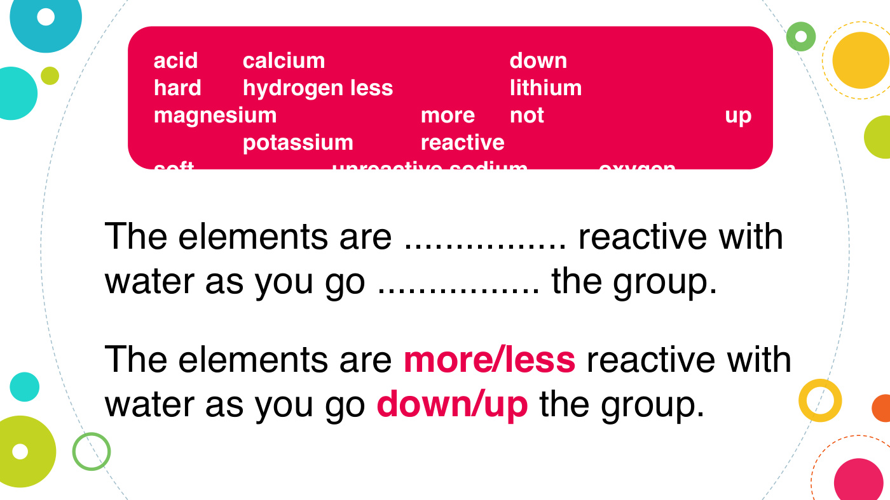
빈칸 문제: 원소들은 족(group)을 따라 …… 갈수록 물과 …… 반응성이 크다(reactive).
정답 형식: 원소들은 족을 따라 아래로(down)/위로(up) 갈수록 물과 더(more)/덜(less) 반응성이 크다.
1족 원소(알칼리 금속)는 족을 따라 아래로(down) 갈수록 물과 더(more) 격렬하게 반응한다. 그래서 정답은 'more reactive … down the group'이다.
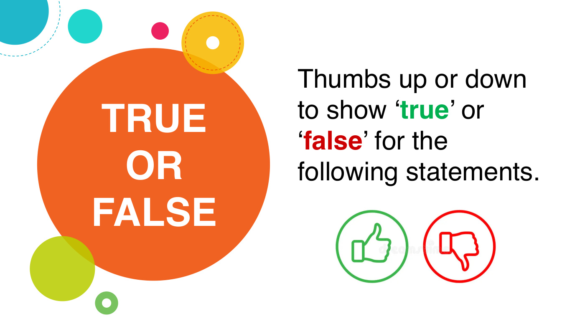
다음 문장들을 보고 엄지를 올리거나 내려서 '참(true)'인지 '거짓(false)'인지 나타낸다.
(그림: 초록색 동그라미 안에 엄지를 올린 손 = 참, 빨간색 동그라미 안에 엄지를 내린 손 = 거짓)
다음 장부터 1족 원소(Group 1 elements, 알칼리 금속)에 대한 문장이 나온다. 맞으면 엄지를 올리고(true), 틀리면 엄지를 내린다(false).
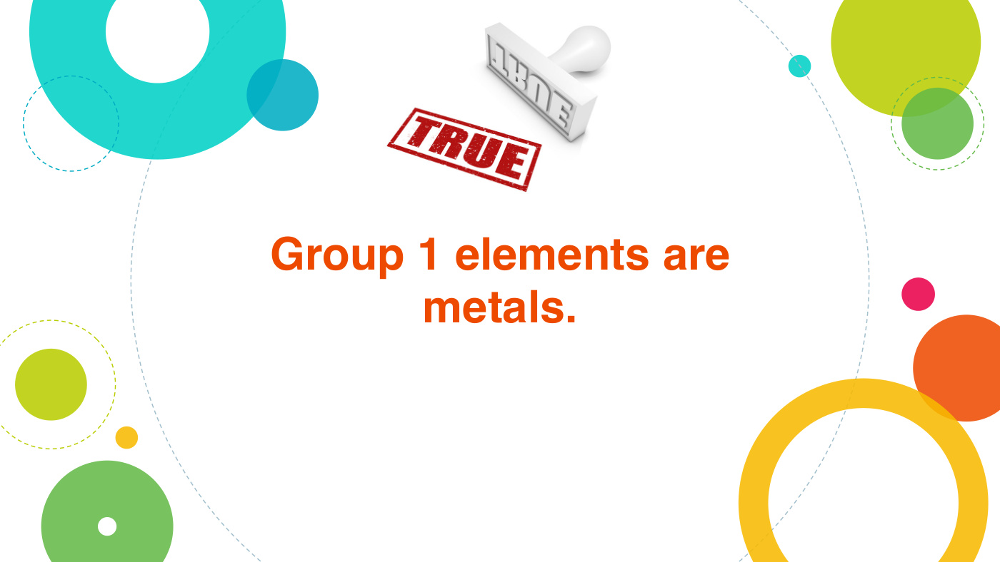
1족 원소(Group 1 elements)는 금속(metals)이다.
1족 원소는 알칼리 금속(alkali metals)이라고 부른다. 금속이지만 무르고 녹는점이 낮아 칼로도 자를 수 있다.
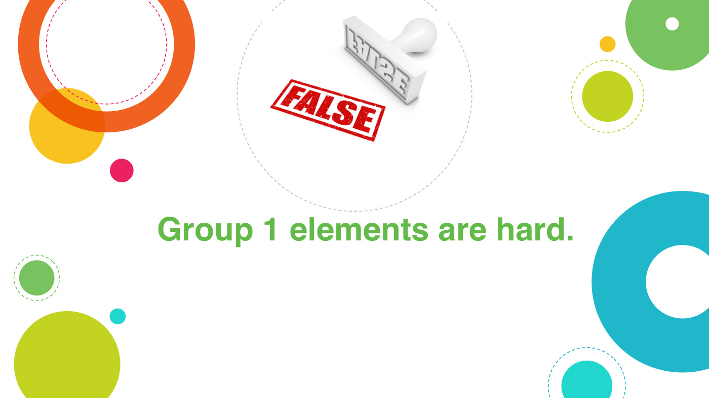
그림: 빨간 글씨로 거짓(FALSE)이라는 도장이 찍혀 있다. → 이 말은 틀린 문장이다.
1족 원소(알칼리 금속, alkali metals)는 무르다(soft). 칼로 쉽게 자를 수 있다(can be cut with a knife).
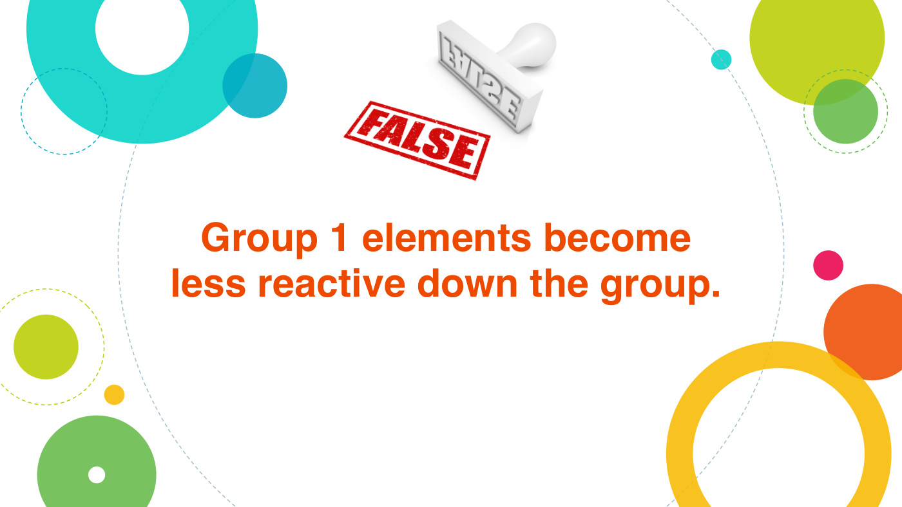
1족 원소(Group 1 elements)는 족의 아래로 내려갈수록 반응성(reactive)이 작아진다.
이 문장은 틀렸다. 1족 원소(알칼리 금속, alkali metals)는 아래로 내려갈수록 반응성이 더 커진다(more reactive down the group). 원자가 커져 가장 바깥 전자(outer electron)가 원자핵에서 멀어지므로 전자를 더 쉽게 잃기 때문이다.
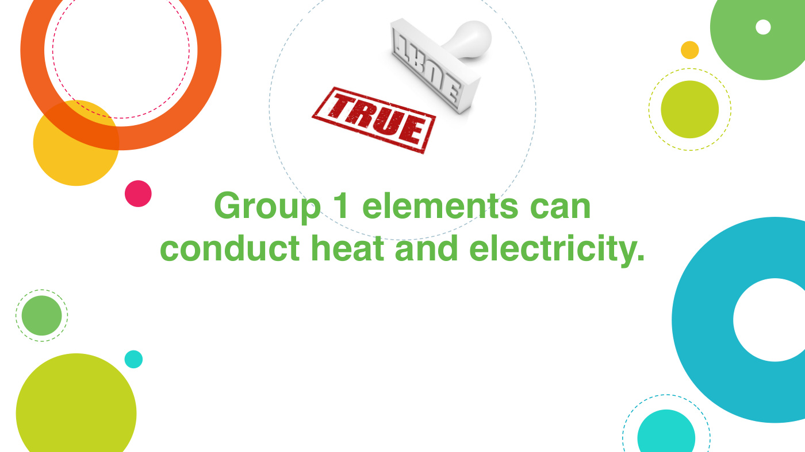
1족 원소(Group 1 elements)는 열(heat)과 전기(electricity)를 전도할(conduct) 수 있다.
1족 원소는 알칼리 금속(alkali metals)이라서 다른 금속처럼 열과 전기를 잘 전달한다. 그래서 이 문장은 참이다.
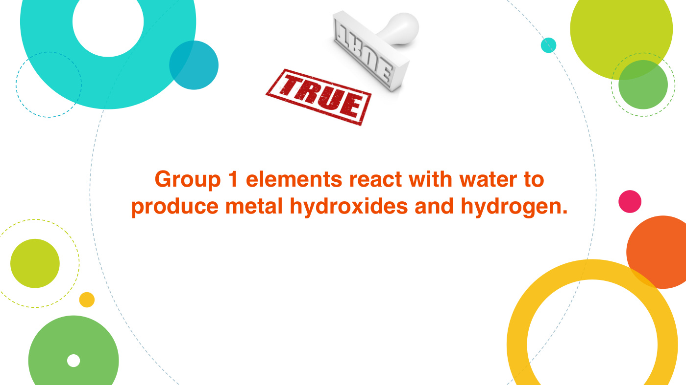
1족 원소(Group 1 elements)는 물(water)과 반응하여 금속 수산화물(metal hydroxides)과 수소(hydrogen)를 만든다.
예를 들어 나트륨은 물과 반응해 수산화나트륨과 수소 기체가 된다: 2Na + 2H₂O → 2NaOH + H₂. 이때 생기는 금속 수산화물은 물에 녹아 알칼리성 용액이 되므로 1족을 알칼리 금속(alkali metals)이라고 부른다.
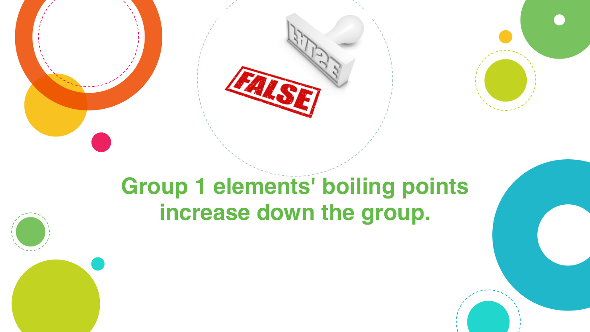
1족 원소(Group 1 elements)의 끓는점(boiling point)은 족 아래로 갈수록 높아진다(increase down the group).
이 문장은 틀렸다. 1족 원소는 아래로 갈수록 원자가 커지고 금속 결합이 약해져서 녹는점과 끓는점이 모두 낮아진다(decrease down the group).

표 칸: 수업 제목(Lesson Title) / 도달(Meeting) / 우수(Exceeding) / 숙달(Mastering)
원자 구조(Atomic Structure)
· 도달: 나는 아원자 입자(subatomic particles)의 이름과 그 전하(charges)를 말할 수 있다.
· 우수: 나는 여러 원자에서 전자(electrons)가 어떻게 배치되는지 설명할 수 있다.
· 숙달: 나는 주기표(periodic table)를 이용해 여러 원자의 전자 배치(electron configuration)를 그릴 수 있다.
1족 – 알칼리 금속(Group 1 – The Alkali Metals) ← 주황색 네모로 강조됨
· 도달: 나는 1족 원소(group 1 elements)를 나열하고, 알칼리 금속(alkali metals)으로서의 성질을 설명할 수 있다.
· 우수: 나는 1족 원소의 반응성(reactivity)을 원자가 껍질 전자(valence shell electrons)와 관련지어 설명할 수 있다.
· 숙달: 나는 족을 위/아래로 읽어 갈 때 알칼리 금속에 나타나는 경향(trends)을 설명할 수 있다.
17족 – 할로젠(Group 7 – The Halogens)
· 도달: 나는 7족 원소를 나열하고, 할로젠(halogens)으로서의 성질을 설명할 수 있다.
· 우수: 나는 7족 원소의 반응성을 원자가 껍질 전자와 관련지어 설명할 수 있다.
· 숙달: 나는 족을 위/아래로 읽어 갈 때 할로젠에 나타나는 경향을 설명할 수 있다.
0족 – 비활성 기체(Group 0 – The Noble Gases)
· 도달: 나는 0족 원소를 나열하고, 비활성 기체(noble gases)로서의 성질을 설명할 수 있다.
· 우수: 나는 0족 원소가 원자가 껍질 전자 때문에 반응하지 않는다(inert)는 것을 설명할 수 있다.
· 숙달: 나는 족을 위/아래로 읽어 갈 때 비활성 기체에 나타나는 경향을 설명할 수 있다.
이온 결합(Ionic Bonding)
· 도달: 나는 이온 결합을 금속 원자(metal atom)와 비금속 원자(nonmetal atom)가 결합하는 것으로 설명할 수 있다.
· 우수: 나는 금속은 전자를 잃어 양이온(positive ions)이 되고, 비금속은 전자를 얻어 음이온(negative ions)이 되는 까닭을 설명할 수 있다.
· 숙달: 나는 주기표를 이용해 이온 결합을 보여 주는 정확한 점-십자 그림(dot and cross diagrams)을 그릴 수 있다.
공유 결합(Covalent Bonding)
· 도달: 나는 공유 결합을 두 개 이상의 비금속 원자가 결합하는 것으로 설명할 수 있다.
· 우수: 나는 원자들이 원자가 전자를 공유(share)하여 공유 결합 분자(covalent molecules)를 만드는 방법을 설명할 수 있다.
· 숙달: 나는 주기표를 이용해 단일·이중·삼중 공유 결합(single, double or triple covalent bonds)의 정확한 점-십자 그림을 그릴 수 있다.
이번 수업은 주황색 칸인 1족 알칼리 금속이다. 가장 높은 단계는 족을 아래로 내려갈수록 반응성이 커지는 경향을 원자가 전자 1개로 설명하는 것이다. Group 7은 영국식 번호로, 우리 교과서에서는 17족이다.
주기율표의 세로줄을 족(group)이라고 한다. 같은 족에 있는 원소들은 가장 바깥 껍질의 전자 수(outer shell electrons)가 같아서 성질이 서로 비슷하다. 그래서 족 번호만 봐도 그 원소가 어떤 식으로 반응할지 짐작할 수 있다.
같은 족 안에서 위에서 아래로 내려가면 전자 껍질(shell)이 하나씩 늘어난다. 껍질이 늘어나니 원자가 커지고, 바깥 전자는 원자핵에서 더 멀어진다. 이 한 가지 변화가 아래에서 말하는 여러 경향성(trend)의 원인이 된다.
이 단원에서 다루는 대표적인 족은 1족 알칼리 금속(Group 1, alkali metals), 7족 할로젠(Group 7, halogens), 0족(8족) 비활성 기체(Group 0, noble gases)다. 1족은 아래로 갈수록 반응성이 커지고, 7족은 아래로 갈수록 반응성이 작아진다. 0족은 바깥 껍질이 꽉 차 있어서 거의 반응하지 않는다.
외우기보다 이유로 이해하는 것이 중요하다. 1족은 전자를 하나 잃어야 하는데 아래로 갈수록 바깥 전자가 핵에서 멀어 잘 떨어져 나가므로 반응성이 커진다. 7족은 전자를 하나 얻어야 하는데 아래로 갈수록 핵이 멀어 전자를 끌어당기기 어려워지므로 반응성이 작아진다.
✍️ 꼭 알아야 하는 것
- 같은 족 원소는 바깥 껍질 전자 수가 같아서 성질이 비슷하다는 것, 그리고 족 번호 = 바깥 껍질 전자 수라는 관계를 설명할 수 있어야 한다.
- 1족은 아래로 갈수록 반응성 증가, 7족은 아래로 갈수록 반응성 감소라는 방향과 그 이유(원자 크기·껍질 수 변화)를 함께 말할 수 있어야 한다.
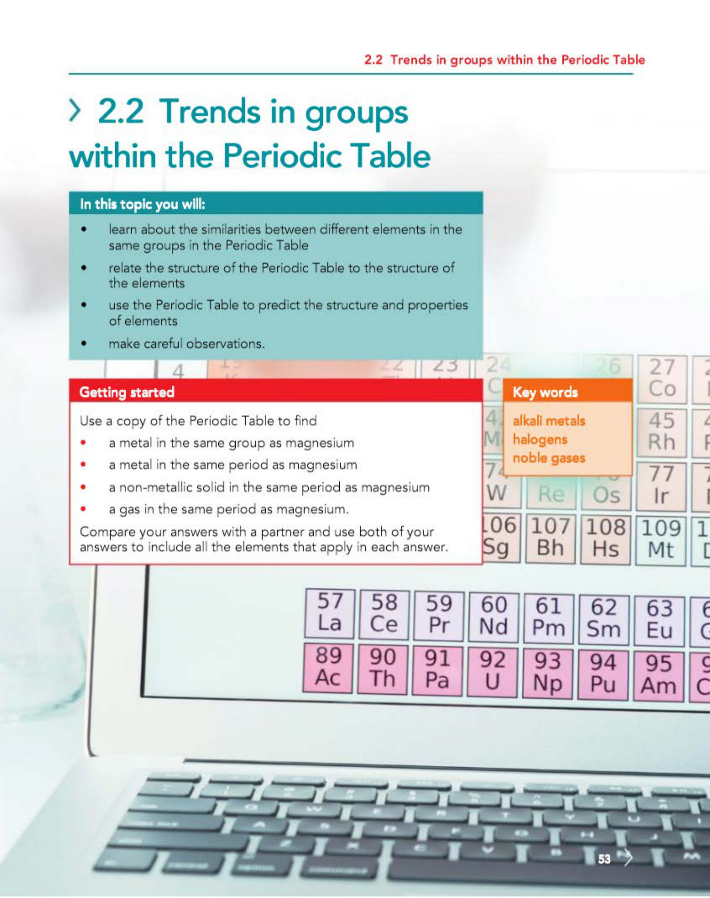
이 단원에서 할 일:
• 주기표에서 같은 족(group)에 있는 서로 다른 원소들의 공통점(similarities)을 배운다
• 주기표의 구조를 원소의 구조와 연결한다
• 주기표를 이용해 원소의 구조와 성질(properties)을 예측한다(predict)
• 꼼꼼하게 관찰한다
시작하기(Getting started)
주기표를 한 장 준비해서 다음을 찾는다.
• 마그네슘(magnesium)과 같은 족(same group)에 있는 금속 하나
• 마그네슘과 같은 주기(same period)에 있는 금속 하나
• 마그네슘과 같은 주기에 있는 비금속 고체(non-metallic solid) 하나
• 마그네슘과 같은 주기에 있는 기체 하나
짝과 답을 비교하고, 두 사람의 답을 합쳐서 각 문항에 해당하는 원소를 모두 적는다.
핵심 낱말(Key words)
알칼리 금속(alkali metals)
할로젠(halogens)
비활성 기체(noble gases)
배경 그림: 노트북 화면에 주기표가 떠 있다(원자번호와 원소기호 La, Ce, U, Pu 등이 보인다).
족(group)은 주기표의 세로줄이고, 주기(period)는 가로줄이다. 마그네슘(Mg)은 2족·3주기라서 같은 족 금속은 Be·Ca 등, 같은 주기 금속은 Na·Al, 비금속 고체는 Si·P·S, 기체는 Cl·Ar이다.
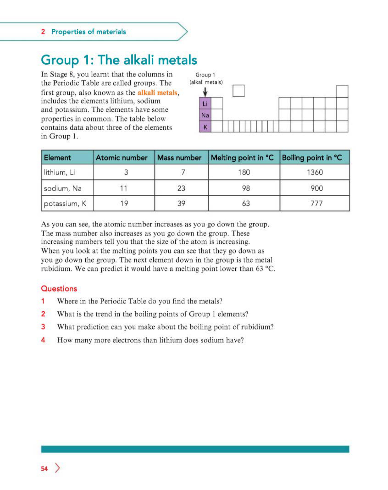
1족: 알칼리 금속(Group 1: The alkali metals)
8학년(Stage 8)에서 주기표(Periodic Table)의 세로줄을 족(groups)이라고 부른다고 배웠다. 첫 번째 족은 알칼리 금속(alkali metals)이라고도 하며, 리튬(lithium), 나트륨(sodium), 칼륨(potassium) 같은 원소가 들어 있다. 이 원소들은 몇 가지 성질이 서로 같다. 아래 표는 1족 원소 세 개에 대한 자료다.
[그림] 주기표 틀에서 맨 왼쪽 세로줄의 Li, Na, K 칸이 보라색으로 칠해져 있고, 화살표로 '1족(알칼리 금속)'이라고 표시되어 있다.
[표] 원소(Element) / 원자 번호(Atomic number) / 질량수(Mass number) / 녹는점(Melting point, °C) / 끓는점(Boiling point, °C)
· 리튬(lithium), Li — 3 / 7 / 180 / 1360
· 나트륨(sodium), Na — 11 / 23 / 98 / 900
· 칼륨(potassium), K — 19 / 39 / 63 / 777
보다시피 족에서 아래로 내려갈수록 원자 번호(atomic number)가 커진다. 질량수(mass number)도 아래로 내려갈수록 커진다. 이렇게 숫자가 커진다는 것은 원자의 크기(size of the atom)가 커진다는 뜻이다.
녹는점을 보면 족에서 아래로 내려갈수록 녹는점이 낮아진다. 이 족에서 칼륨 바로 아래 원소는 금속 루비듐(rubidium)이다. 루비듐의 녹는점은 63 °C보다 낮을 것이라고 예측(predict)할 수 있다.
문제(Questions)
1 주기표에서 금속은 어디에 있는가?
2 1족 원소의 끓는점은 어떤 경향(trend)을 보이는가?
3 루비듐의 끓는점에 대해 어떤 예측을 할 수 있는가?
4 나트륨은 리튬보다 전자(electrons)가 몇 개 더 많은가?
끓는점도 녹는점처럼 아래로 갈수록 낮아지므로(1360→900→777) 루비듐의 끓는점은 777 °C보다 낮다고 예측한다. 원자 번호는 전자 수와 같아서 나트륨(11)은 리튬(3)보다 전자가 8개 더 많다.
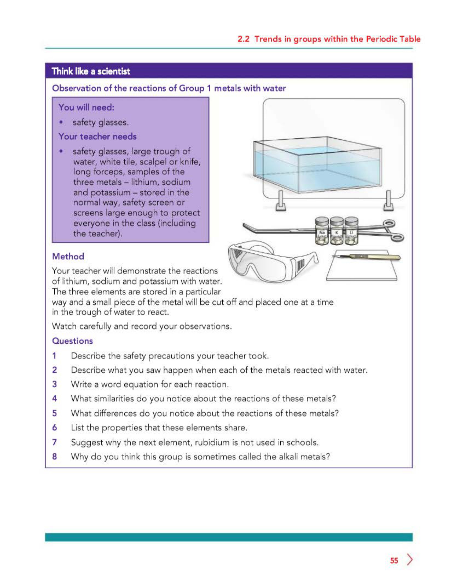
1족 금속(Group 1 metals)과 물의 반응 관찰
여러분이 준비할 것:
• 보안경(safety glasses)
선생님이 준비할 것:
• 보안경, 물을 담은 큰 수조(trough), 흰 타일, 메스(scalpel)나 칼, 긴 핀셋(forceps), 평소 방식대로 보관한 세 금속 리튬(lithium)·나트륨(sodium)·칼륨(potassium) 시료, 반 전체(선생님 포함)를 막아 줄 만큼 큰 안전 가림막(safety screen)
방법(Method)
선생님이 리튬, 나트륨, 칼륨이 물과 반응하는 모습을 보여 준다. 이 세 원소는 특별한 방식으로 보관되어 있고, 금속을 작게 잘라 한 번에 하나씩 물이 담긴 수조에 넣어 반응시킨다.
잘 보고 관찰 결과(observations)를 적는다.
그림: 안전 가림막 뒤에 놓인 물 수조, 긴 핀셋, Na·K·Li 라벨이 붙은 병 세 개, 보안경, 흰 타일 위의 메스
질문(Questions)
1 선생님이 지킨 안전 수칙(safety precautions)을 설명하라.
2 각 금속이 물과 반응할 때 본 것을 설명하라.
3 각 반응의 낱말 반응식(word equation)을 써라.
4 이 금속들의 반응에서 어떤 공통점(similarities)이 보이는가?
5 이 금속들의 반응에서 어떤 차이점(differences)이 보이는가?
6 이 원소들이 함께 가진 성질(properties)을 적어라.
7 그다음 원소인 루비듐(rubidium)을 학교에서 쓰지 않는 까닭을 짐작해 보라.
8 이 족을 왜 알칼리 금속(alkali metals)이라고 부르는지 생각해 보라.
1족 금속은 공기·물과 반응하지 않도록 기름(oil) 속에 보관한다. 물과 만나면 금속 + 물 → 금속 수산화물 + 수소(예: sodium + water → sodium hydroxide + hydrogen)가 되고, 아래로 갈수록(Li → Na → K) 더 격렬하게 반응한다. 생긴 수산화물이 알칼리(alkali)이기 때문에 알칼리 금속이라 부른다.
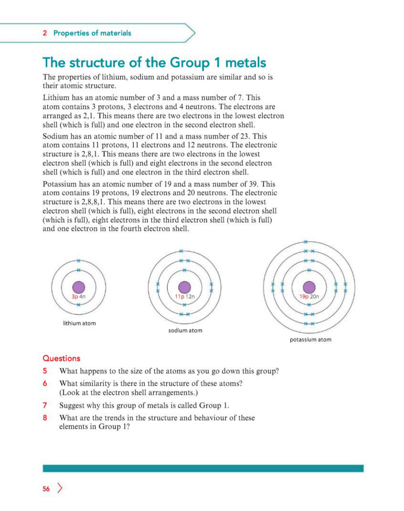
1족 금속의 구조(The structure of the Group 1 metals)
리튬(lithium), 나트륨(sodium), 칼륨(potassium)은 성질이 비슷하고, 원자 구조(atomic structure)도 비슷하다.
리튬은 원자 번호(atomic number)가 3이고 질량수(mass number)가 7이다. 이 원자에는 양성자(proton) 3개, 전자(electron) 3개, 중성자(neutron) 4개가 들어 있다. 전자는 2,1로 배치된다. 가장 안쪽 전자 껍질(electron shell)에 전자 2개가 있고(꽉 참), 두 번째 전자 껍질에 전자 1개가 있다는 뜻이다.
나트륨은 원자 번호가 11이고 질량수가 23이다. 이 원자에는 양성자 11개, 전자 11개, 중성자 12개가 들어 있다. 전자 배치(electronic structure)는 2,8,1이다. 가장 안쪽 껍질에 전자 2개(꽉 참), 두 번째 껍질에 전자 8개(꽉 참), 세 번째 껍질에 전자 1개가 있다는 뜻이다.
칼륨은 원자 번호가 19이고 질량수가 39이다. 이 원자에는 양성자 19개, 전자 19개, 중성자 20개가 들어 있다. 전자 배치는 2,8,8,1이다. 가장 안쪽 껍질에 전자 2개(꽉 참), 두 번째 껍질에 8개(꽉 참), 세 번째 껍질에 8개(꽉 참), 네 번째 껍질에 전자 1개가 있다는 뜻이다.
[그림] 세 원자의 전자 껍질 그림이다. 가운데 보라색 원자핵(nucleus)과 둘레의 동그라미 껍질, 껍질 위의 × 표시(전자)가 그려져 있다.
· 리튬 원자(lithium atom): 핵에 3p 4n(양성자 3, 중성자 4), 껍질 2개에 전자 2·1개
· 나트륨 원자(sodium atom): 핵에 11p 12n, 껍질 3개에 전자 2·8·1개
· 칼륨 원자(potassium atom): 핵에 19p 20n, 껍질 4개에 전자 2·8·8·1개
질문(Questions)
5. 이 족에서 아래로 내려갈수록 원자의 크기는 어떻게 되는가?
6. 이 원자들의 구조에는 어떤 공통점이 있는가? (전자 껍질 배치를 보라.)
7. 이 금속 무리를 왜 1족(Group 1)이라고 부르는지 추측해 보라.
8. 1족 원소들의 구조와 행동(반응성)에는 어떤 경향성(trend)이 있는가?
56쪽
1족 원소는 모두 가장 바깥 껍질에 전자가 1개라서 1족이라 부르고 성질이 비슷하다. 아래로 갈수록 껍질 수가 늘어 원자가 커지고, 바깥 전자를 잃기 쉬워져 반응성(reactivity)이 커진다.
7족은 주기표의 또 다른 족으로, 할로젠(halogens)이라고 부른다. 이 족에는 플루오린(fluorine), 염소(chlorine), 브로민(bromine)이 들어 있다. 이 원소들은 여러 성질을 함께 가진다.
앞의 두 원소(플루오린과 염소)는 실온(room temperature)에서 기체(gas)다. 브로민은 액체(liquid)다.
가장 반응성이 큰(most reactive) 것은 플루오린이고, 그다음이 염소다. 셋 중 브로민이 반응성이 가장 작다(least reactive).
[그림] 주기표 모양 칸 그림. 오른쪽에서 두 번째 세로줄에 화살표로 '7족(할로젠)'이 표시되어 있고, 위에서부터 F, Cl, Br 칸이 초록색으로 칠해져 있다.
[표] 원소(element) / 원자 번호(atomic number) / 전자 배치(electronic structure) / 질량수(mass number) / 색깔(colour) / 녹는점(melting point, °C) / 끓는점(boiling point, °C)
플루오린, F / 9 / 2,7 / 19 / 연한 노란색(pale yellow) / −220 / −188
염소, Cl / 17 / 2,8,7 / 35 / 노란빛이 도는 초록색(yellowish green) / −101 / −34
브로민, Br / 35 / (빈칸) / 80 / 갈색(brown) / −7 / 59
문제(Questions)
9. 할로젠은 금속(metals)인가, 비금속(non-metals)인가?
10. 7족에서 녹는점은 어떤 경향(trend)을 보이는가?
11. 7족에서 색깔은 어떤 경향을 보이는가?
12. 7족에서 끓는점은 어떤 경향을 보이는가?
13. 7족의 다음 원소인 아이오딘(iodine)의 끓는점과 녹는점은 어떨지 예측해 보아라.
14. 아이오딘은 브로민보다 반응성이 클까, 작을까?
15. 표에 브로민의 전자 배치가 빠져 있다. 가장 바깥 껍질(outer shell)에 전자가 몇 개 있을지 예측해 보아라.
할로젠은 족의 아래로 내려갈수록 녹는점·끓는점이 높아지고 색은 진해지며, 반응성은 작아진다(1족 알칼리 금속과 반대). 7족 원소는 모두 바깥 껍질 전자가 7개라서 브로민의 전자 배치는 2,8,18,7이고, 바깥 껍질 전자는 7개다.
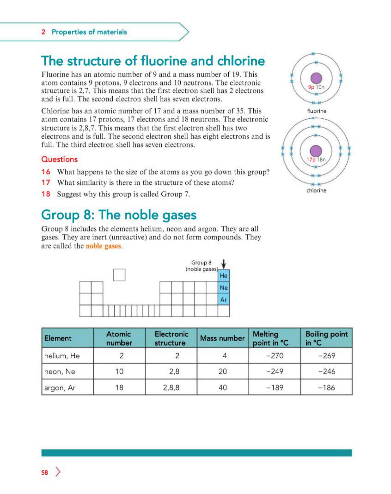
플루오린과 염소의 구조(The structure of fluorine and chlorine)
플루오린(fluorine)은 원자 번호(atomic number)가 9이고 질량수(mass number)가 19이다. 이 원자에는 양성자(protons) 9개, 전자(electrons) 9개, 중성자(neutrons) 10개가 있다. 전자 배치(electronic structure)는 2,7이다. 첫째 전자 껍질(electron shell)에 전자가 2개 있어 꽉 찼고, 둘째 전자 껍질에는 전자가 7개 있다는 뜻이다.
염소(chlorine)는 원자 번호가 17이고 질량수가 35이다. 이 원자에는 양성자 17개, 전자 17개, 중성자 18개가 있다. 전자 배치는 2,8,7이다. 첫째 전자 껍질에 전자가 2개 있어 꽉 찼고, 둘째 전자 껍질에 전자가 8개 있어 꽉 찼으며, 셋째 전자 껍질에는 전자가 7개 있다는 뜻이다.
그림: 플루오린 원자(핵 9p 10n, 껍질 2개에 전자 2·7개), 염소 원자(핵 17p 18n, 껍질 3개에 전자 2·8·7개)
질문(Questions)
16 이 족에서 아래로 내려갈수록 원자의 크기는 어떻게 되는가?
17 이 원자들의 구조에는 어떤 공통점이 있는가?
18 이 족을 왜 7족(Group 7)이라고 부르는지 이유를 제시하라.
8족: 비활성 기체(Group 8: The noble gases)
8족에는 헬륨(helium), 네온(neon), 아르곤(argon) 같은 원소가 있다. 모두 기체이다. 이들은 비활성(inert, unreactive)이어서 화합물(compounds)을 만들지 않는다. 이들을 비활성 기체(noble gases)라고 부른다.
그림: 주기표 맨 오른쪽 세로줄에 8족(비활성 기체) He, Ne, Ar이 파란색으로 표시되어 있다.
표: 원소(Element) / 원자 번호 / 전자 배치 / 질량수 / 녹는점(°C, melting point) / 끓는점(°C, boiling point)
헬륨 He: 2 / 2 / 4 / −270 / −269
네온 Ne: 10 / 2,8 / 20 / −249 / −246
아르곤 Ar: 18 / 2,8,8 / 40 / −189 / −186
7족 원소는 모두 가장 바깥 껍질에 전자가 7개라서 7족이라 부르고, 아래로 갈수록 껍질 수가 늘어 원자가 커진다. 비활성 기체는 바깥 껍질이 꽉 차 있어 반응하지 않고, 아래로 갈수록 녹는점·끓는점이 높아진다.
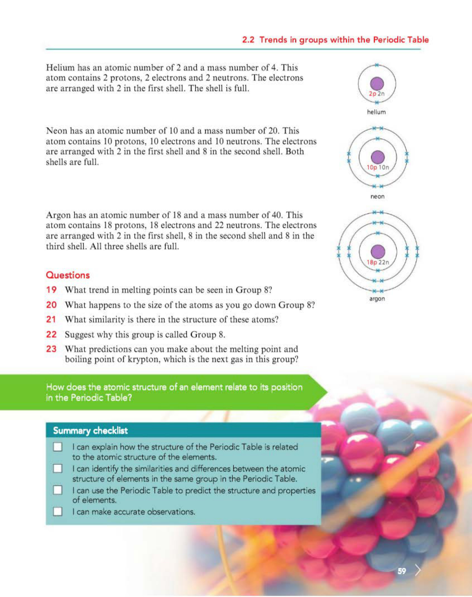
[그림: 헬륨 — 핵에 2p 2n(양성자 2, 중성자 2), 껍질 1개에 전자 2개]
네온(neon)은 원자 번호가 10이고 질량수가 20이다. 이 원자에는 양성자 10개, 전자 10개, 중성자 10개가 들어 있다. 전자는 첫째 껍질에 2개, 둘째 껍질에 8개가 배치된다. 두 껍질 모두 가득 차 있다.
[그림: 네온 — 핵에 10p 10n, 껍질 2개에 전자 2개·8개]
아르곤(argon)은 원자 번호가 18이고 질량수가 40이다. 이 원자에는 양성자 18개, 전자 18개, 중성자 22개가 들어 있다. 전자는 첫째 껍질에 2개, 둘째 껍질에 8개, 셋째 껍질에 8개가 배치된다. 세 껍질 모두 가득 차 있다.
[그림: 아르곤 — 핵에 18p 22n, 껍질 3개에 전자 2개·8개·8개]
질문(Questions)
19. 8족(Group 8)에서 녹는점(melting point)은 어떤 경향(trend)을 보이는가?
20. 8족에서 아래로 내려갈수록 원자의 크기(size of the atoms)는 어떻게 되는가?
21. 이 원자들의 구조(structure)에는 어떤 공통점(similarity)이 있는가?
22. 이 족을 왜 8족이라고 부르는지 추측해 보아라.
23. 이 족의 다음 기체인 크립톤(krypton)의 녹는점과 끓는점(boiling point)에 대해 어떤 예측(prediction)을 할 수 있는가?
[초록 띠] 원소의 원자 구조(atomic structure)는 주기표(Periodic Table)에서 그 원소의 위치와 어떤 관계가 있는가?
요약 체크리스트(Summary checklist)
□ 주기표의 구조가 원소의 원자 구조와 어떻게 관련되는지 설명할 수 있다.
□ 주기표에서 같은 족(same group)에 있는 원소들의 원자 구조가 가진 공통점과 차이점을 찾을 수 있다.
□ 주기표를 이용해 원소의 구조와 성질(properties)을 예측할 수 있다.
□ 정확하게 관찰(observations)할 수 있다.
헬륨·네온·아르곤은 모두 바깥 껍질이 전자로 가득 차 있다(full outer shell)는 공통점이 있어 반응을 거의 하지 않는다. 헬륨만 바깥 껍질 전자가 2개이고 네온·아르곤은 8개라서 이 족을 8족(Group 8, 0족이라고도 함)이라고 부른다.
할로젠(halogens) — 주기율표(Periodic table) 7족(group 7)에 있는 원소들이다.
이 자료에서 다루는 셋은 염소(chlorine), 브로민(bromine), 아이오딘(iodine)이다.
7족은 위에서 아래로 내려갈수록 성질이 규칙적으로 변하므로, 주기율표에서의 자리만 보고도 그 원소의 성질을 예측(predict)할 수 있다.
치환(displacement) — 화합물 속에 들어 있는 반응성이 약한 원소를 반응성이 더 강한 원소가 밀어내고 그 자리를 차지하는 반응이다.
영어 displacement를 replacement(바꿔치기)로 생각하면 이해하기 쉽다.
즉 더 센 할로젠이 약한 할로젠을 염(salt)에서 쫓아낸다.
실험 방법 — 할로젠 용액(halogen solution)과 포타슘 염(potassium salt) 용액을 섞는다.
용액에 들어 있는 할로젠이 포타슘 염 속의 할로젠보다 반응성이 더 클 때만 색 변화(colour change)가 일어난다.
반응성이 더 작거나 같으면 아무 일도 일어나지 않는다.
색 대조군(colour controls) — 표에서 색칠된 칸은 두 용액에 같은 할로젠이 들어 있어 치환이 일어날 수 없는 조합이다.
그래서 이 칸들을 '반응이 안 일어났을 때의 색' 기준으로 쓴다.
섞은 뒤 색이 그 줄의 색칠된 칸과 같으면 반응이 없는 것이므로 no reaction이라고 쓴다.
섞은 뒤 색이 그 칸과 달라지면 반응이 일어난 것이므로 어떤 색에서 어떤 색으로 변했는지 색 변화를 설명해서 쓴다.
결과 — 반응성 순서(reactivity) — 가장 반응성이 큰 것은 염소(chlorine)다.
이유는 염소가 브로민과 아이오딘을 둘 다 그들의 포타슘 염에서 밀어냈고, 반대로 브로민이나 아이오딘은 염소를 그 염에서 밀어내지 못했기 때문이다.
가장 반응성이 작은 것은 아이오딘(iodine)이다.
이유는 아이오딘이 염소와 브로민 양쪽에게 자기 염에서 밀려났고, 자신은 둘 중 어느 것도 밀어내지 못했기 때문이다.
따라서 세 원소의 반응성 순서는 염소 > 브로민 > 아이오딘이며, 이는 7족에서 아래로 내려갈수록 반응성이 작아진다는 것을 보여준다.
✍️ 꼭 알아야 하는 것
- 치환(displacement)의 정의 — 더 반응성이 큰 원소가 화합물 속 덜 반응성인 원소를 밀어내는 것이며, 그 반대 방향으로는 일어나지 않는다.
- 색 변화가 있으면 반응이 일어난 것, 색이 그대로면 no reaction이라고 적는다. 같은 할로젠끼리인 색칠된 칸은 비교 기준(control)이다.
- 염소 > 브로민 > 아이오딘 순으로 반응성이 크며, 그 근거를 '무엇이 무엇을 염에서 밀어냈는가'로 설명할 수 있어야 한다.
📚 이 자료의 핵심 단어
주기율표(periodic table)는 원소들을 아무렇게나 늘어놓은 표가 아니다.
19세기 러시아 화학자 멘델레예프(Dmitri Mendeleev)는 당시 알려진 원소들을 원자량(atomic mass) 순서로 줄 세웠다.
그렇게 줄을 세우자 비슷한 성질을 가진 원소들이 일정한 간격마다 되풀이해서 나타났다. 이 되풀이되는 성질을 주기성(periodicity)이라고 한다.
그래서 멘델레예프는 성질이 닮은 원소들이 같은 세로줄(group, 족)에 오도록 표를 접어 배열했다.
빈칸
멘델레예프가 천재로 불리는 진짜 이유는 표를 만든 것 자체가 아니라, 표에 빈칸을 남긴 것이다.
자리에 맞는 원소가 없으면 억지로 다른 원소를 밀어 넣지 않고 칸을 비워 두었다.
그리고 그 빈칸에 들어올 원소가 어떤 성질을 가질지, 원자량이 얼마일지까지 예측(prediction)했다.
나중에 실제로 갈륨(gallium), 스칸듐(scandium), 저마늄(germanium) 같은 원소가 발견되었고 성질이 예측과 거의 맞아떨어졌다. 그래서 주기율표는 단순한 정리표가 아니라 예측하는 과학 도구로 인정받았다.
7족
이 단원에서 다루는 할로젠(the halogens)은 주기율표 오른쪽의 7족(Group 7)이다.
같은 족에 있다는 것은 최외각 전자(outer shell electrons) 수가 같다는 뜻이고, 할로젠은 모두 최외각 전자가 7개다.
전자가 하나만 더 있으면 껍질이 꽉 차기 때문에 할로젠은 전자 1개를 얻어 -1가 음이온(halide ion)이 되려는 성질이 강하다.
멘델레예프 시대에는 전자를 몰랐지만, 그가 성질만 보고 묶어 놓은 세로줄이 나중에 전자 배치(electronic configuration)로 설명되면서 표가 옳았음이 증명되었다.
✍️ 꼭 알아야 하는 것
- 멘델레예프는 원소를 원자량(atomic mass) 순으로 배열하고, 성질이 비슷한 원소를 같은 족(group)에 두었다.
- 멘델레예프는 아직 발견되지 않은 원소를 위해 빈칸을 남기고 그 성질을 예측했으며, 뒤에 발견된 원소들이 예측과 맞았다.
- 같은 족 원소는 최외각 전자 수가 같아 성질이 비슷하고, 7족 할로젠은 최외각 전자가 7개다.
1족(Group 1)은 주기율표 맨 왼쪽 세로줄에 있는 금속들이다. 이 자료의 단원 이름이 2.2 Trends in groups within the Periodic Table, 즉 '주기율표에서 같은 족 안의 경향'인 이유가 여기 있다. 같은 족에 속한 원소들은 성질이 비슷하고, 아래로 내려갈수록 그 성질이 일정한 방향으로 변한다는 것이 핵심이다.
이 금속들을 알칼리 금속(alkali metals)이라고 부른다. 이름이 붙은 이유는 물과 반응했을 때 나오는 물질이 알칼리성(염기성)이기 때문이다. 그래서 이 자료는 단순히 이름을 외우는 것이 아니라, 왜 그런 이름이 붙었고 어떤 성질(properties)을 가지는지를 설명한다.
또 하나의 축은 반응성(reactivity)이다. 같은 1족이라도 원소마다 반응하는 정도가 다르고, 그 차이가 족 안에서 규칙적으로 나타난다. 이 규칙을 잡아두면 처음 보는 원소가 나와도 위아래 위치만으로 어느 쪽이 더 세게 반응할지 판단할 수 있다.
✍️ 꼭 알아야 하는 것
- 1족 원소들이 알칼리 금속(alkali metals)으로 불리는 이유와 이들의 공통된 성질을 말로 설명할 수 있어야 한다.
- 같은 족 안에서 위에서 아래로 내려갈 때 반응성(reactivity)이 어떻게 변하는지를 경향(trend)으로 정리해 둬야 한다.
주기율표에서 세로줄을 족(group)이라고 부른다. 같은 족에 있는 원소들은 최외각 전자(outer shell electrons) 수가 같아서 성질이 서로 닮았다. 이 자료의 단원 제목이 2.2 족 안에서의 경향(Trends in groups within the Periodic Table)인 이유가 이것이다. 즉 '한 족을 위에서 아래로 내려갈 때 성질이 어떻게 변하는가'가 핵심이다.
제목에 나온 Group 7은 할로젠(Halogens)이고, Group 0은 비활성기체(Noble gases)다. 이 둘은 주기율표 오른쪽 끝에 나란히 있지만 성격은 정반대로 배우는 짝이다. 그래서 이 자료가 두 족을 한 묶음으로 다룬다.
자료가 말하는 Properties는 각 족의 성질이고, Trends는 족을 따라 내려갈 때 그 성질이 일정한 방향으로 변하는 흐름이다. 공부할 때는 원소 이름을 외우는 데서 멈추지 말고, 위에서 아래로 갈수록 무엇이 커지고 무엇이 작아지는지를 방향으로 정리해 두는 것이 좋다.
✍️ 꼭 알아야 하는 것
- Group 7은 할로젠(Halogens), Group 0은 비활성기체(Noble gases)라는 이름과 위치를 정확히 구분해 둔다.
- 각 족의 성질(properties)을 따로 외우기보다, 족을 위에서 아래로 내려갈 때의 변화 경향(trends)으로 묶어서 정리한다.
이 글은 Jing Le Neo가 올린 게시물이고, Aditya가 찾은 알칼리 금속(alkali metals) 실험 영상을 반 친구들에게 공유하는 내용이다. 영상 제목은 Brainiac Alkali Metals이고 길이는 3분짜리 YouTube 영상이다. 수업 시간에 배우는 내용을 눈으로 직접 보라고 올린 자료다.
글에 붙은 설명은 Cool Alkali Metal Experiments Video, 즉 '알칼리 금속 실험 영상'이라는 뜻이다. 알칼리 금속은 주기율표 1족(Group 1)에 있는 금속들을 말한다. 영상 자체를 봐야 어떤 실험이 나오는지 알 수 있으므로, 글만 읽고 넘기지 말고 영상을 직접 재생해서 보는 것이 이 자료의 핵심이다.
이 게시물에는 댓글(comment)을 달 수 있는 칸이 있다. 영상을 보고 궁금한 점이나 느낀 점이 있으면 댓글로 남기면 된다.
✍️ 꼭 알아야 하는 것
- 이 자료는 설명 글이 아니라 영상 링크 공유이므로, 반드시 영상을 직접 봐야 내용을 알 수 있다.
- 영상 주제는 알칼리 금속(alkali metals) 실험이다.
📚 이 자료의 핵심 단어
7족 할로겐(Group 7, halogens)
주기율표의 한 족이고 이 자료에서는 플루오린(fluorine, F)·염소(chlorine, Cl)·브로민(bromine, Br) 세 가지를 다룬다.
모두 비금속(non-metal)이다.
실온에서 플루오린과 염소는 기체(gas), 브로민은 액체(liquid)다.
반응성(reactivity)은 플루오린이 가장 크고, 그다음 염소, 브로민이 가장 작다. 즉 족을 아래로 내려갈수록 반응성이 줄어든다.
할로겐 수치 자료(data)
플루오린: 원자번호(atomic number) 9, 전자배치(electronic structure) 2,7, 질량수(mass number) 19, 색은 옅은 노랑(pale yellow), 녹는점(melting point) -220°C, 끓는점(boiling point) -188°C.
염소: 원자번호 17, 전자배치 2,8,7, 질량수 35, 색은 황록색(yellowish green), 녹는점 -101°C, 끓는점 -34°C.
브로민: 원자번호 35, 질량수 80, 색은 갈색(brown), 녹는점 -7°C, 끓는점 59°C.
할로겐의 경향성(trends)
아래로 내려갈수록 녹는점과 끓는점이 높아진다(-220 → -101 → -7, -188 → -34 → 59).
색은 아래로 갈수록 진해진다(옅은 노랑 → 황록색 → 갈색).
원자의 크기(size of the atom)는 아래로 갈수록 커진다. 전자껍질(electron shell)이 하나씩 더 생기기 때문이다.
그래서 다음 원소인 아이오딘(iodine)은 브로민보다 녹는점·끓는점이 더 높고, 색은 더 진하며, 반응성은 더 작을 것이라고 예측할 수 있다.
할로겐의 원자 구조(atomic structure)
플루오린은 원자번호 9, 질량수 19 → 양성자(proton) 9개, 전자(electron) 9개, 중성자(neutron) 10개다. 전자배치 2,7은 첫 번째 껍질에 2개가 차 있고 두 번째 껍질에 7개가 있다는 뜻이다.
염소는 원자번호 17, 질량수 35 → 양성자 17개, 전자 17개, 중성자 18개다. 전자배치 2,8,7은 첫 껍질 2개(가득), 둘째 껍질 8개(가득), 셋째 껍질에 7개라는 뜻이다.
중성자 수는 질량수 − 원자번호로 구한다.
공통점은 가장 바깥 껍질(outer shell)에 전자가 7개라는 것이다. 그래서 이 족을 Group 7이라고 부르고, 브로민의 바깥 껍질 전자도 7개로 예측된다.
8족 비활성기체(Group 8, noble gases)
헬륨(helium, He)·네온(neon, Ne)·아르곤(argon, Ar)이 있고 모두 기체다.
이들은 반응하지 않는다(inert, unreactive). 화합물(compound)을 만들지 않는다.
헬륨: 원자번호 2, 전자배치 2, 질량수 4, 녹는점 -270°C, 끓는점 -269°C.
네온: 원자번호 10, 전자배치 2,8, 질량수 20, 녹는점 -249°C, 끓는점 -246°C.
아르곤: 원자번호 18, 전자배치 2,8,8, 질량수 40, 녹는점 -189°C, 끓는점 -186°C.
비활성기체의 구조와 경향성
헬륨은 양성자 2개·전자 2개·중성자 2개이고 첫 껍질 2개가 가득 찼다.
네온은 양성자 10개·전자 10개·중성자 10개이고 첫 껍질 2개, 둘째 껍질 8개로 두 껍질 모두 가득 찼다.
아르곤은 양성자 18개·전자 18개·중성자 22개이고 첫 껍질 2개, 둘째 8개, 셋째 8개로 세 껍질 모두 가득 찼다.
공통점은 전자껍질이 모두 꽉 차 있다는 것이고, 그래서 다른 원소와 반응하지 않는다.
아래로 내려갈수록 녹는점·끓는점이 높아지고(-270 → -249 → -189), 원자 크기도 커진다.
다음 기체인 크립톤(krypton)은 아르곤보다 녹는점·끓는점이 더 높을 것이라고 예측된다.
참고로 이 자료는 헬륨·네온·아르곤의 바깥 껍질이 각각 2, 8, 8이라 8족이라 부른다고 설명한다.
✍️ 꼭 알아야 하는 것
- 할로겐은 비금속이고, 바깥 껍질 전자가 7개라서 Group 7이다. 아래로 갈수록 녹는점·끓는점이 높아지고, 색은 진해지고, 원자는 커지고, 반응성은 작아진다.
- 비활성기체는 전자껍질이 모두 꽉 차 있어서 반응하지 않는다(inert). 아래로 갈수록 녹는점·끓는점이 높아진다.
- 원자번호 = 양성자 수 = 전자 수, 중성자 수 = 질량수 − 원자번호로 구한다. 이걸로 아이오딘·크립톤 같은 다음 원소의 성질도 예측할 수 있다.
📚 이 자료의 핵심 단어
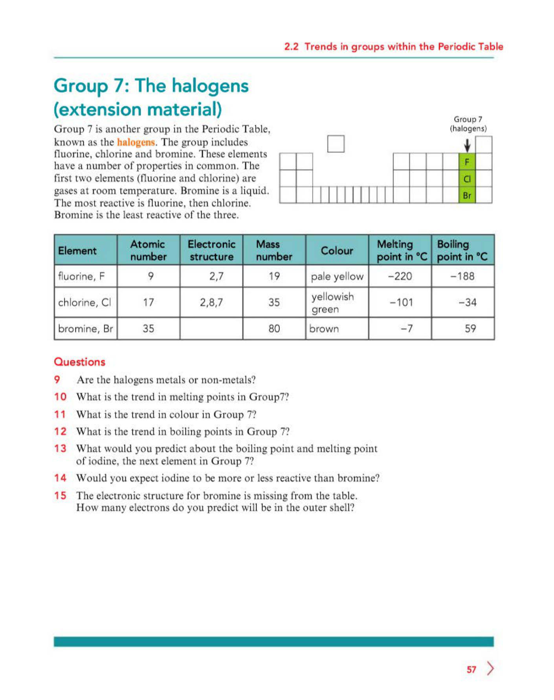
1쪽 · 7족 할로젠 원소
7족은 주기율표의 또 다른 족으로, 할로젠이라고 불린다.
이 족에는 플루오린, 염소, 브로민이 들어간다.
이 원소들은 공통된 성질을 여럿 가지고 있다.
앞의 두 원소(플루오린과 염소)는 실온에서 기체다.
브로민은 액체다.
반응성이 가장 큰 것은 플루오린이고, 그다음이 염소다.
브로민은 셋 중 반응성이 가장 작다.
2.2 주기율표 안에서 족의 경향성
7족(할로젠) 표
원소 / 원자번호 / 전자배치 / 질량수 / 색 / 녹는점(°C) / 끓는점(°C)
플루오린 F / 9 / 2,7 / 19 / 옅은 노랑 / -220 / -188
염소 Cl / 17 / 2,8,7 / 35 / 노란빛 초록 / -101 / -34
브로민 Br / 35 / (빠짐) / 80 / 갈색 / -7 / 59
문제
9 할로젠은 금속인가, 비금속인가?
10 7족에서 녹는점의 경향은 어떠한가?
11 7족에서 색의 경향은 어떠한가?
12 7족에서 끓는점의 경향은 어떠한가?
13 7족의 다음 원소인 아이오딘의 끓는점과 녹는점은 어떠할 것이라고 예측하는가?
14 아이오딘은 브로민보다 반응성이 더 클 것 같은가, 더 작을 것 같은가?
15 표에서 브로민의 전자배치가 빠져 있다. 가장 바깥 껍질에 전자가 몇 개 있을 것이라고 예측하는가?
7족(할로젠)에는 플루오린·염소·브로민이 있고, 실온에서 플루오린과 염소는 기체, 브로민은 액체다.
족을 따라 내려갈수록 녹는점과 끓는점은 높아지고 색은 진해지며, 반응성은 플루오린 > 염소 > 브로민 순으로 작아진다.
2쪽 · 플루오린·염소의 구조와 8족
플루오린과 염소의 구조
플루오린은 원자번호가 9이고 질량수가 19이다.
이 원자는 양성자 9개, 전자 9개, 중성자 10개를 가진다.
전자배치는 2,7이다.
이는 첫 번째 전자껍질에 전자가 2개 있어 가득 찼다는 뜻이다.
두 번째 전자껍질에는 전자가 7개 있다.
(그림) 양성자 9개, 중성자 10개 — 플루오린
염소는 원자번호가 17이고 질량수가 35이다.
이 원자는 양성자 17개, 전자 17개, 중성자 18개를 가진다.
전자배치는 2,8,7이다.
이는 첫 번째 전자껍질에 전자가 2개 있어 가득 찼다는 뜻이다.
두 번째 전자껍질에는 전자가 8개 있어 가득 찼다.
세 번째 전자껍질에는 전자가 7개 있다.
(그림) 양성자 17개, 중성자 18개 — 염소
문제
16 이 족을 따라 아래로 내려갈수록 원자의 크기는 어떻게 되는가?
17 이 원자들의 구조에는 어떤 공통점이 있는가?
18 이 족을 7족이라 부르는 까닭을 말해 보시오.
8족: 비활성 기체
8족에는 헬륨, 네온, 아르곤이 들어간다.
이들은 모두 기체이다.
이들은 비활성(반응하지 않음)이어서 화합물을 만들지 않는다.
이들을 비활성 기체라고 부른다.
(표) 8족(비활성 기체) He, Ne, Ar — 원소 / 원자번호 / 전자배치 / 질량수 / 녹는점(°C) / 끓는점(°C)
헬륨 He — 2 / 2 / 4 / -270 / -269
네온 Ne — 10 / 2,8 / 20 / -249 / -246
아르곤 Ar — 18 / 2,8,8 / 40 / -189 / -186
플루오린(2,7)과 염소(2,8,7)는 맨 바깥 전자껍질에 전자가 7개로 같다. 그래서 7족으로 묶인다.
8족 비활성 기체는 전자배치가 2 / 2,8 / 2,8,8로 바깥껍질이 꽉 차 있어 반응하지 않고 화합물을 만들지 않으며, 녹는점·끓는점이 매우 낮다.
3쪽 · 주기율표 족의 경향성 — 8족
헬륨은 원자번호 2, 질량수 4이다.
이 원자는 양성자 2개, 전자 2개, 중성자 2개를 가진다.
전자는 첫 번째 껍질에 2개가 배열되어 있다.
그 껍질은 꽉 차 있다.
네온은 원자번호 10, 질량수 20이다.
이 원자는 양성자 10개, 전자 10개, 중성자 10개를 가진다.
전자는 첫 번째 껍질에 2개, 두 번째 껍질에 8개가 배열되어 있다.
두 껍질 모두 꽉 차 있다.
아르곤은 원자번호 18, 질량수 40이다.
이 원자는 양성자 18개, 전자 18개, 중성자 22개를 가진다.
전자는 첫 번째 껍질에 2개, 두 번째 껍질에 8개, 세 번째 껍질에 8개가 배열되어 있다.
세 껍질 모두 꽉 차 있다.
질문
19 8족에서 녹는점에 어떤 경향이 보이는가?
20 8족을 따라 아래로 내려갈수록 원자의 크기는 어떻게 되는가?
21 이 원자들의 구조에는 어떤 공통점이 있는가?
22 이 족을 왜 8족이라 부르는지 추측해 보라.
23 이 족의 다음 기체인 크립톤의 녹는점과 끓는점에 대해 어떤 예측을 할 수 있는가?
원소의 원자 구조는 주기율표에서의 위치와 어떤 관계가 있는가?
요약 점검표
나는 주기율표의 구조가 원소의 원자 구조와 어떻게 관련되는지 설명할 수 있다.
나는 주기율표에서 같은 족에 있는 원소들의 원자 구조의 공통점과 차이점을 찾아낼 수 있다.
나는 주기율표를 이용해 원소의 구조와 성질을 예측할 수 있다.
나는 정확하게 관찰할 수 있다.
헬륨 그림: 양성자 2, 질량수 20으로 표기
네온 그림: 양성자 10, 중성자 10
아르곤 그림: 양성자 18, 중성자 22
헬륨·네온·아르곤은 전자껍질이 모두 꽉 차 있다는 공통점이 있다 — 헬륨은 첫 껍질 2개, 네온은 2·8개, 아르곤은 2·8·8개다.
원자번호는 양성자 수이자 전자 수이고, 질량수에서 원자번호를 빼면 중성자 수가 된다 — 아르곤은 질량수 40, 원자번호 18이라 중성자가 22개다.
같은 족 원소는 원자 구조가 닮아 있어서, 주기율표의 위치를 보고 아직 배우지 않은 원소(크립톤)의 녹는점·끓는점까지 예측할 수 있다.
할로젠(halogens)은 주기율표 7족(Group 7)에 있는 원소들이다.
위에서부터 플루오린(fluorine, F), 염소(chlorine, Cl), 브로민(bromine, Br), 아이오딘(iodine, I), 아스타틴(astatine, At) 순서다.
모두 비금속(non-metals)이고, 원자 두 개가 붙은 이원자 분자(diatomic molecules)로 존재한다. 그래서 기호를 쓸 때 F₂, Cl₂, Br₂, I₂처럼 2를 붙인다.
최외각 전자(outer shell electrons)— 할로젠은 모두 가장 바깥 껍질에 전자가 7개 있다. 같은 족이라 바깥 전자 수가 같고, 그래서 성질이 서로 비슷하다.
전자 8개를 채워 안정해지려면 1개만 얻으면 된다. 그래서 할로젠은 반응성이 크고, 전자 1개를 받아 −1가 음이온(예: Cl⁻, 염화 이온 chloride)이 된다.
금속과 만나면 전자를 주고받아 이온 결합(ionic bond)을 만들고, 비금속과 만나면 전자를 공유해 공유 결합(covalent bond)을 만든다.
겉모습과 상태(appearance and state)— 아래로 내려갈수록 색이 진해지고 상태도 바뀐다.
플루오린은 연노란 기체(gas), 염소는 황록색 기체, 브로민은 적갈색 액체(liquid), 아이오딘은 회흑색 고체(solid)다.
즉 위에서 아래로 갈수록 녹는점(melting point)과 끓는점(boiling point)이 높아진다. 분자가 커질수록 분자 사이 끌어당기는 힘이 세져서 떼어놓기가 어려워지기 때문이다.
반응성 경향(trend in reactivity)— 금속과 달리, 할로젠은 위로 갈수록 반응성이 커진다. 그래서 플루오린이 가장 반응성이 크고 아이오딘이 가장 작다.
이유는 전자를 끌어당기는 힘이다. 위쪽 원소일수록 원자가 작아 최외각 껍질이 핵(nucleus)에 가깝고, 안쪽 전자의 가림 효과(shielding)도 적다. 그래서 전자 1개를 훨씬 쉽게 끌어당긴다.
아래로 내려갈수록 껍질이 늘어나 바깥 전자가 핵에서 멀어지고 가려져서, 전자를 잡아당기는 힘이 약해진다 → 반응성이 작아진다.
치환 반응(displacement reactions)— 반응성이 큰 할로젠은 반응성이 작은 할로젠을 그 화합물에서 밀어낸다.
예: 염소를 브로민화 칼륨(potassium bromide, KBr) 용액에 넣으면 염소가 브로민을 밀어내고, 용액이 브로민 색(주황빛)으로 변한다.
Cl₂ + 2KBr → 2KCl + Br₂
반대로 브로민을 염화 칼륨(potassium chloride, KCl)에 넣으면 아무 일도 일어나지 않는다. 브로민이 염소보다 반응성이 작기 때문이다.
이 실험으로 할로젠의 반응성 순서를 확인할 수 있다.
✍️ 꼭 알아야 하는 것
- 할로젠은 최외각 전자가 7개이고, 1개를 얻어 −1 이온이 된다는 것
- 족의 위로 갈수록 반응성이 커지고(F가 최고), 아래로 갈수록 녹는점·끓는점이 높아진다는 반대 방향 두 경향
- 치환 반응 결과로 반응성 순서를 설명하고 식(Cl₂ + 2KBr → 2KCl + Br₂)으로 쓸 수 있는 것
할로젠(halogens, Group 7) — 주기율표 7족에 있는 원소들이다. 이 자료에서 다루는 셋은 염소(chlorine, Cl), 브롬(bromine, Br), 아이오딘(iodine, I)이다.
같은 족이므로 성질이 비슷하고, 족을 따라 아래로 내려갈수록 성질이 규칙적으로 변한다. 그래서 주기율표에서의 위치만 보고도 어떤 할로젠의 성질을 예측(predict)할 수 있다.
치환(displacement) — 화합물 속에 들어 있는 반응성이 약한 원소를, 반응성이 더 강한 원소가 밀어내고 그 자리를 대신 차지하는 반응이다.
영어 displacement를 replacement(바꿔치기)로 생각하면 이해가 쉽다.
즉 더 센 할로젠이 약한 할로젠을 염(salt)에서 쫓아낸다.
실험 방법 — 할로젠 용액(염소수·브롬수·아이오딘 용액)을 칼륨염 용액(potassium salt)과 섞는다. 예를 들어 염소수 + 브롬화칼륨(potassium bromide)처럼 짝을 바꿔 가며 섞는다.
반응이 일어났는지는 색 변화(colour change)로 판단한다.
색 변화의 규칙 — 색이 변하는 경우는 오직 하나다. 넣어 준 할로젠 용액 쪽이 칼륨염 속 할로젠보다 반응성이 더 클 때다.
반대로 반응성이 더 약하면 아무 일도 일어나지 않는다.
또 표에서 색칠(highlight)된 칸처럼 양쪽이 같은 할로젠인 조합은 치환이 일어날 수 없으므로 절대 반응하지 않는다.
색 대조군(colour control) — 같은 할로젠끼리 섞은 그 칸들을 비교 기준으로 쓴다.
섞은 뒤 색이 그 줄의 기준 색과 같으면 → 반응이 없는 것이므로 칸에 no reaction이라고 쓴다.
섞은 뒤 색이 기준 색과 달라졌으면 → 반응이 일어난 것이므로 어떤 색에서 어떤 색으로 변했는지 색 변화를 적는다.
결과 — 가장 반응성이 큰 할로젠은 염소(chlorine)다. 근거는 두 가지다. 염소는 브롬과 아이오딘을 둘 다 그들의 칼륨염에서 밀어냈고, 반대로 브롬이나 아이오딘은 염소를 그 염에서 밀어내지 못했다.
결과 — 가장 반응성이 작은 할로젠은 아이오딘(iodine)이다. 아이오딘은 염소와 브롬 둘 모두에게 자기 염에서 밀려났고, 자신은 염소도 브롬도 밀어내지 못했다.
따라서 반응성 순서는 염소 > 브롬 > 아이오딘이며, 이는 7족에서 아래로 내려갈수록 반응성이 작아진다는 규칙과 맞는다.
✍️ 꼭 알아야 하는 것
- 치환(displacement)의 정의 — 더 반응성이 큰 원소가 화합물 속 덜 반응성인 원소를 밀어내는 반응이라는 것을 영어로 설명할 수 있어야 한다.
- 색이 변하면 반응이 일어난 것, 기준 색과 같으면 no reaction이라고 쓴다는 판단 규칙.
- 반응성 순서 Cl > Br > I 와 그 근거 — '염소는 브롬과 아이오딘을 둘 다 염에서 치환했고 자신은 치환되지 않았다'처럼 실험 결과를 근거로 들어 설명해야 한다.
📚 이 자료의 핵심 단어
2.3 원소의 반응 · 이온 결합Why elements react · 선생님 2.3 · C1.6화학
원자와 이온(atom and ion)
원자(atom)는 양성자(proton)의 수와 전자(electron)의 수가 같아서 전체적으로 전하가 0이다.
이 원자가 전자를 잃거나 얻으면 양성자 수와 전자 수가 달라진다. 이렇게 전하를 띠게 된 입자를 이온(ion)이라고 한다.
전자를 잃으면 음전하가 줄어드니 양이온(positive ion)이 되고, 전자를 얻으면 음전하가 늘어나니 음이온(negative ion)이 된다.
리튬과 플루오린의 구조(structure of lithium and fluorine)
리튬(lithium, Li)은 전자가 3개이고 전자 배치는 2,1이다. 바깥 껍질에 전자가 1개라서 주기표(Periodic Table)의 1족(Group 1)에 있는 금속(metal)이다.
플루오린(fluorine, F)은 전자가 9개이고 전자 배치는 2,7이다. 바깥 껍질에 전자가 7개라서 7족(Group 7)에 있는 비금속(nonmetal)이다.
원자가 반응하는 것은 바깥 껍질을 전자로 꽉 채워 안정한 구조(full outer shell)를 만들려고 하기 때문이다.
금속은 전자를 잃는다(metals lose electrons)
리튬처럼 바깥 껍질에 전자가 1~3개뿐인 금속은 전자를 몇 개 얻기보다 몇 개 버리는 편이 훨씬 쉽다.
리튬은 바깥 전자 1개를 내주고 전자 배치가 2가 되어 안정해진다. 양성자는 3개인데 전자는 2개가 되므로 Li⁺ 양이온이 된다.
비금속은 전자를 얻는다(nonmetals gain electrons)
플루오린처럼 바깥 껍질에 전자가 5~7개 있는 비금속은 전자를 몇 개 받아 껍질을 채우는 편이 쉽다.
플루오린은 전자 1개를 받아 전자 배치가 2,8이 된다. 양성자는 9개인데 전자는 10개가 되므로 F⁻ 음이온이 된다.
이온결합(ionic bonding)
이온결합은 금속 원자와 비금속 원자가 결합하는 것이다.
금속 원자가 비금속 원자에게 전자를 넘겨주어(electron transfer) 양이온과 음이온이 생긴다.
반대 전하를 띤 두 이온은 서로 강하게 끌어당긴다. 이 끌어당기는 힘(electrostatic attraction)이 바로 이온결합이다.
리튬과 플루오린이 만나면 Li⁺와 F⁻가 끌어당겨 플루오린화 리튬(lithium fluoride, LiF)이 만들어진다.
이온결합과 공유결합(ionic and covalent bonds)
이온결합은 전자를 주고받아 생기는 결합이다. 이와 달리 비금속끼리 전자를 함께 나누어 쓰며 생기는 결합은 공유결합(covalent bond)이라고 하며, 이 단원에서 이온결합과 함께 비교해서 배운다.
화합물의 화학식(formula)도 결합하는 원자의 수에 맞추어 쓴다. LiF는 Li⁺ 하나와 F⁻ 하나가 만나 전하 합이 0이 되므로 1:1로 쓴다.
✍️ 꼭 알아야 하는 것
- 이온결합은 금속과 비금속 사이에서 전자를 주고받아 생기고, 반대 전하 이온끼리 끌어당기는 힘이다(ionic bond = electrostatic attraction between oppositely charged ions).
- 금속은 전자를 잃어 양이온(positive ion)이 되고, 비금속은 전자를 얻어 음이온(negative ion)이 되는 이유를 바깥 껍질 전자 수로 설명할 수 있어야 한다.
- 리튬(2,1)과 플루오린(2,7)의 원자 구조, 그리고 이온이 된 Li⁺(2)와 F⁻(2,8)의 구조를 그리고 비교할 수 있어야 한다.
📚 이 자료의 핵심 단어
반응하는 이유 — 원자는 가장 바깥 전자껍질(outer shell)이 전자로 꽉 찰 때 가장 안정하다.
18족 비활성 기체(noble gases)는 바깥 껍질이 이미 꽉 차 있어서 거의 반응하지 않는다.
다른 원소의 원자들은 전자를 잃거나, 얻거나, 함께 나누어 비활성 기체와 같은 전자 배치(electron configuration)를 가지려 한다.
이렇게 해서 원소끼리 반응하고 화합물(compound)이 만들어진다.
이온(ion) — 원자가 전자를 잃거나 얻으면 전하를 띤 입자가 되는데, 이것을 이온이라고 한다.
금속(metal) 원자는 바깥 껍질의 전자를 잃어 양이온(positive ion, cation)이 된다. 예를 들어 나트륨(Na)은 전자 1개를 잃어 Na⁺가 된다.
비금속(non-metal) 원자는 전자를 얻어 음이온(negative ion, anion)이 된다. 예를 들어 염소(Cl)는 전자 1개를 얻어 Cl⁻가 된다.
이온 결합(ionic bond) — 금속과 비금속이 반응하면 금속 원자에서 비금속 원자로 전자가 이동(electron transfer)한다.
그 결과 생긴 양이온과 음이온은 서로 반대 전하를 띠므로 강하게 끌어당긴다.
이 반대 전하 사이의 강한 끌림을 정전기적 인력(electrostatic attraction)이라고 하며, 이것이 이온 결합이다.
대표적인 예가 염화나트륨(sodium chloride, NaCl)이다.
✍️ 꼭 알아야 하는 것
- 원소가 반응하는 이유: 바깥 전자껍질을 꽉 채워 비활성 기체처럼 안정해지려고 한다(full outer shell).
- 이온 결합은 금속과 비금속 사이에서 전자가 이동해 생긴 양이온과 음이온이 정전기적 인력(electrostatic attraction)으로 끌어당기는 결합이다.
- 금속은 전자를 잃어 양이온(positive ion), 비금속은 전자를 얻어 음이온(negative ion)이 된다.
이온 결합(ionic bond)
이온 결합은 보통 금속(metal)과 비금속(non-metal) 사이에서 생긴다.
금속 원자는 바깥 껍질의 전자(electron)를 잃어 양이온(positive ion)이 되고, 비금속 원자는 그 전자를 받아 음이온(negative ion)이 된다.
이렇게 전자를 주고받으면 두 원자 모두 바깥 껍질이 꽉 찬 안정한 상태가 된다. 이것이 원소들이 반응해 화합물(compound)을 만드는 이유다.
예를 들어 나트륨(Na)은 전자 1개를 잃어 Na⁺가 되고, 염소(Cl)는 전자 1개를 얻어 Cl⁻가 된다.
구조(structure)
이온 화합물은 양이온과 음이온이 번갈아 규칙적으로 늘어선 거대 이온 격자(giant ionic lattice) 구조를 이룬다.
반대 전하를 띤 이온끼리 끌어당기는 힘을 정전기적 인력(electrostatic attraction)이라 하고, 이 힘이 모든 방향으로 강하게 작용한다.
성질(properties)
녹는점·끓는점이 높다(high melting and boiling points) — 강한 정전기적 인력을 끊으려면 많은 에너지가 필요하기 때문이다.
고체일 때는 전기가 통하지 않는다 — 이온이 격자에 고정되어 움직일 수 없기 때문이다.
녹이거나(molten) 물에 녹이면(dissolved) 전기가 통한다 — 이온이 자유롭게 움직이며 전하를 옮길 수 있기 때문이다.
화학식(formula)
이온 화합물 전체의 전하 합은 0이 되어야 한다.
그래서 양이온과 음이온의 전하가 서로 상쇄되도록 개수를 맞춘다.
예: Na⁺와 Cl⁻는 1:1이라 NaCl, Mg²⁺와 Cl⁻는 1:2라 MgCl₂, Mg²⁺와 O²⁻는 1:1이라 MgO가 된다.
✍️ 꼭 알아야 하는 것
- 금속은 전자를 잃어 양이온, 비금속은 전자를 얻어 음이온이 되며 그 사이의 정전기적 인력(electrostatic attraction)이 이온 결합이다
- 거대 이온 격자(giant ionic lattice) 때문에 녹는점이 높고, 고체에서는 전기가 안 통하지만 녹거나 물에 녹으면 통한다
- 전하의 합이 0이 되도록 이온 개수를 맞춰 화학식(예: MgCl₂)을 쓴다
이온결합이란(ionic bonding)
이온결합은 금속(metal)과 비금속(non-metal)이 반응해서 화합물을 만들 때 생기는 결합이다.
이때 금속 원자는 바깥 껍질의 전자(electron)를 잃고, 비금속 원자는 그 전자를 얻는다.
즉 전자를 나눠 쓰는 것이 아니라 한쪽에서 다른 쪽으로 옮겨 준다(transfer)는 점이 핵심이다.
왜 전자를 주고받을까
원자는 바깥 껍질이 전자로 꽉 찬 상태, 즉 비활성 기체(noble gas)와 같은 전자 배치가 될 때 안정해진다.
금속은 바깥 전자가 적어서 몇 개를 버리는 편이 쉽고, 비금속은 바깥 전자가 많아서 몇 개를 받아 채우는 편이 쉽다.
그래서 금속은 전자를 주고, 비금속은 전자를 받는다.
이온(ion)이 만들어진다
전자를 잃은 금속 원자는 음전하가 줄어 양이온(positive ion)이 된다. 예를 들어 나트륨(Na)은 전자 1개를 잃고 Na⁺가 된다.
전자를 얻은 비금속 원자는 음이온(negative ion)이 된다. 예를 들어 염소(Cl)는 전자 1개를 얻고 Cl⁻가 된다.
1족 금속은 +1, 2족 금속은 +2 이온이 되고, 6족 비금속은 -2, 7족 비금속은 -1 이온이 된다.
결합의 정체 — 정전기적 인력
만들어진 양이온과 음이온은 서로 반대 전하라서 강하게 끌어당긴다.
이 힘을 정전기적 인력(electrostatic attraction)이라고 하며, 이 끌림이 바로 이온결합이다.
점-십자 그림(dot and cross diagram)
이온결합이 만들어지는 과정을 그림으로 나타내는 방법이다.
한 원자의 전자는 점(dot)으로, 다른 원자의 전자는 십자(×)로 그려서 어느 전자가 어디서 왔는지 구별한다.
반응 후의 이온은 대괄호(square brackets)로 감싸고, 괄호 오른쪽 위에 전하(+, -)를 적는다.
예를 들어 염화나트륨(NaCl)에서는 Na의 바깥 전자 1개(×)가 Cl로 옮겨 가서, [Na]⁺ 와 바깥 껍질에 전자 8개가 채워진 [Cl]⁻ 로 그린다. Cl 껍질 안에는 점 7개와 옮겨 온 × 1개가 함께 보인다.
전하 맞추기
화합물 전체는 전하의 합이 0이 되어야 한다.
그래서 마그네슘(Mg²⁺)과 염소(Cl⁻)가 만나면 Cl⁻가 2개 필요해서 MgCl₂가 된다.
산화마그네슘(MgO)처럼 Mg가 전자 2개를 O에 주면 Mg²⁺와 O²⁻가 1:1로 만난다.
✍️ 꼭 알아야 하는 것
- 이온결합은 금속이 비금속에게 전자를 옮겨 주어(electron transfer) 양이온과 음이온이 생기고, 이 둘이 정전기적 인력(electrostatic attraction)으로 끌어당기는 것이다
- 점-십자 그림(dot and cross diagram)에서는 두 원자의 전자를 점과 ×로 구별하고, 이온은 대괄호로 감싼 뒤 오른쪽 위에 전하를 적는다
- 족(group) 번호로 이온 전하를 정하고(1족 +1, 2족 +2, 6족 -2, 7족 -1), 전하 합이 0이 되도록 이온 개수를 맞춘다
2.1 Atomic structure & the Periodic Table
원자 구조와 주기율표Inside the atom (원자 속)
CognitoAn atom has a tiny central nucleus containing protons (+) and neutrons (no charge), with electrons (−) in shells around it.
원자는 가운데 작은 원자핵에 양성자(+)와 중성자(전하 없음)가 있고, 그 둘레 전자껍질에 전자(−)가 있습니다.
The atomic number = number of protons; the mass number = protons + neutrons.
원자번호 = 양성자 수, 질량수 = 양성자 + 중성자.
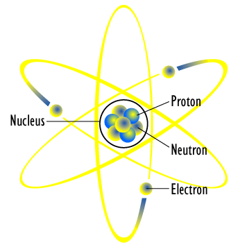
The Periodic Table (주기율표)
FreeScienceLessonsElements are arranged in order of atomic number. Columns are groups; rows are periods.
원소는 원자번호 순으로 배열됩니다. 세로줄은 족, 가로줄은 주기입니다.
Elements in the same group have similar properties.
같은 족 원소는 성질이 비슷합니다.
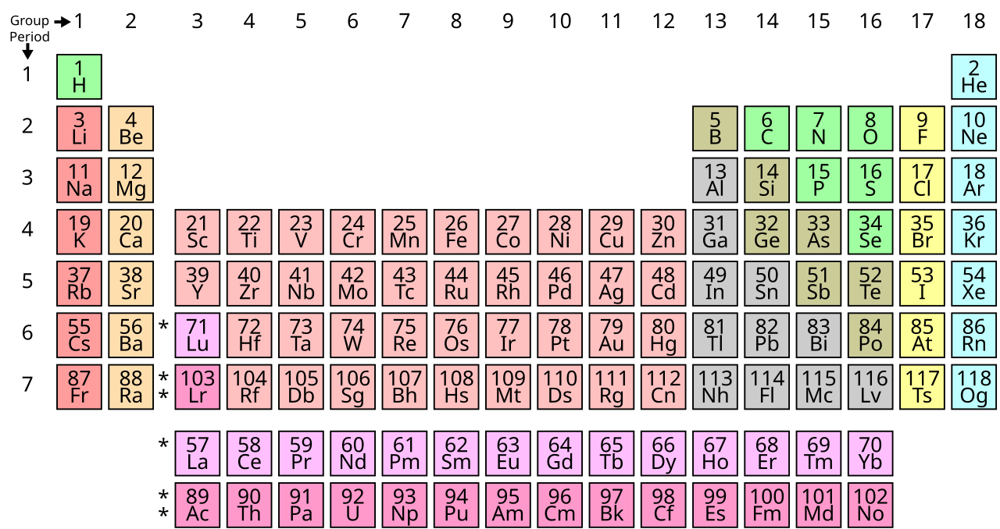
2.2 Trends in Groups
족별 경향성Group trends (족의 경향)
CognitoGroup 1 (alkali metals) get more reactive down the group. Group 7 (halogens) get less reactive down the group.
1족(알칼리 금속)은 아래로 갈수록 반응성↑. 7족(할로젠)은 아래로 갈수록 반응성↓.
Group 0 (noble gases) are very unreactive because they have full electron shells.
0족(비활성 기체)은 전자껍질이 꽉 차서 거의 반응하지 않습니다.
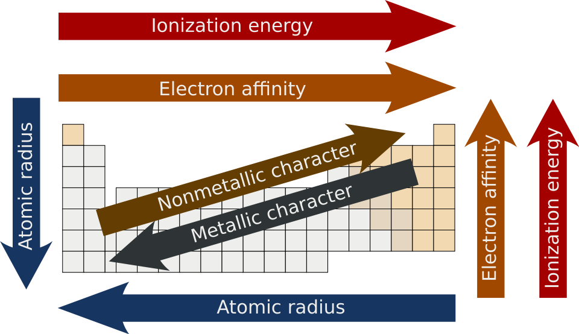
2.3 Why elements react
원소가 반응하는 이유Bonding (결합)
CognitoAtoms react to get a full outer shell (more stable). They can transfer electrons to form ions and ionic bonds, or share electrons to form covalent bonds.
원자는 가장 바깥 전자껍질을 채워 더 안정해지려고 반응합니다. 전자를 주고받아 이온·이온 결합을 만들거나, 전자를 공유해 공유 결합을 만듭니다.
A compound is two or more elements chemically joined.
화합물은 둘 이상의 원소가 화학적으로 결합한 것입니다.
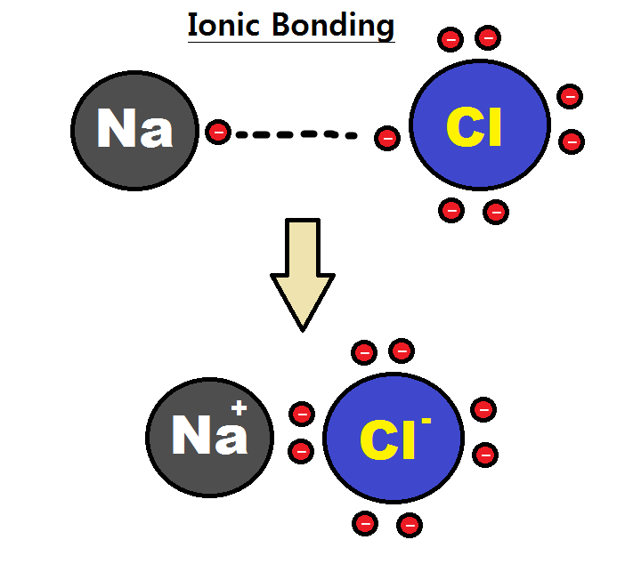
2.4 Simple and giant structures
단순·거대 구조Structures and properties (구조와 성질)
CognitoSimple molecular substances have low melting points and don't conduct electricity.
단순 분자 물질은 녹는점이 낮고 전기를 통하지 않습니다.
Giant structures (giant ionic lattices, giant covalent like diamond) have very high melting points.
거대 구조(거대 이온 결정, 다이아몬드 같은 거대 공유)는 녹는점이 매우 높습니다.
답을 영어로 써본 다음 Show model answer를 눌러 비교하세요.
✅ Model answer
- proton positive (1)
- neutron no charge (1)
- electron negative (1)
✅ Model answer
- number of protons (1)
✅ Model answer
- full outer shell (1)
- stable / no need to react (1)
✅ Model answer
- ionic = electrons transferred (1)
- covalent = electrons shared (1)
✅ Model answer
- many strong bonds (1)
- lots of energy needed to break (1)